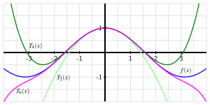

Skip to main content
Contents Index Dark Mode Prev Up Next Scratch ActiveCode Profile \(\newcommand{\dollar}{\$}
\DeclareMathOperator{\erf}{erf}
\DeclareMathOperator{\arctanh}{arctanh}
\DeclareMathOperator{\arcsec}{arcsec}
\newcommand{\lt}{<}
\newcommand{\gt}{>}
\newcommand{\amp}{&}
\definecolor{fillinmathshade}{gray}{0.9}
\newcommand{\fillinmath}[1]{\mathchoice{\colorbox{fillinmathshade}{$\displaystyle \phantom{\,#1\,}$}}{\colorbox{fillinmathshade}{$\textstyle \phantom{\,#1\,}$}}{\colorbox{fillinmathshade}{$\scriptstyle \phantom{\,#1\,}$}}{\colorbox{fillinmathshade}{$\scriptscriptstyle\phantom{\,#1\,}$}}}
\)
Appendix B Answers to Activities
This appendix contains answers to all activities in the text. Answers for preview activities are not included.
1 Understanding the Derivative 1.1 How do we measure velocity? 1.1.1 Position and average velocity
Activity 1.1.2 .
Answer .
\(AV_{[0.4,0.8]} = 12.8\) ft/sec;
\(AV_{[0.7,0.8]} = 8\) ft/sec; the other average velocities are, respectively, 6.56, 6.416, 0, 4.8, 6.24, 6.384, all in ft/sec.
\(m = 12.8\) is the average velocity of the ball between
\(t = 0.4\) and
\(t = 0.8\text{.}\)
Like a straight line with slope about 6.4.
About 6.4 feet per second.
1.1.2 Instantaneous Velocity
Activity 1.1.3 .
Answer .
\(AV_{[1.5,2]} = -24\) ft/sec, which is negative.
The instantaneous velocity at
\(t = 1.5\) is approximately
\(-16\) ft/sec; at
\(t = 2\text{,}\) the instantaneous velocity is about
\(-32\) ft/sec, and
\(-16>-32\text{.}\)
When the ball is rising, its instantaneous velocity is positive, while when the ball is falling, its instantaneous velocity is negative.
Activity 1.1.4 .
Answer .
\(AV_{[2, 2+h]} = -32 - 16h\)
1.2 The notion of limit 1.2.1 The Notion of Limit
Activity 1.2.2 .
Answer .
\(2\text{.}\)
\(12\text{.}\)
\(\frac{1}{2}\text{.}\)
1.2.2 Instantaneous Velocity
Activity 1.2.3 .
Answer .
\(6 + h\text{.}\)
\(6.2\) meters/min.
\(6\) meters per minute.
Activity 1.2.4 .
Answer .
\(AV_{[0.5,1]} = \frac{1-1}{1-0.5} = 0\text{,}\) \(AV_{[1.5,2.5]} = \frac{3-1}{2.5-1.5} = 2\text{,}\) and \(AV_{[0,5]} = \frac{5-0}{5-0} = 1\text{.}\)
Take shorter and shorter time intervals and draw the lines whose slopes represent average velocity. If those lines’ slopes are approaching a single number, that number represents the instantaneous velocity.
The instantaneous velocity at \(t = 2\) is greater than the average velocity on \([1.5,2.5]\text{.}\)
1.3 The derivative of a function at a point 1.3.1 The Derivative of a Function at a Point
Activity 1.3.2 .
Answer .
\(f\) is linear.
The average rate of change on \([1,4]\text{,}\) \([3,7]\text{,}\) and \([5,5+h]\) is \(-2\text{.}\)
\(f'(1)=-2\text{.}\)
\(f'(2)=-2\text{,}\) \(f'(\pi)=-2\text{,}\) and \(f'(-\sqrt{2})=-2\text{,}\) since the slope of a linear function is the same at every point.
Activity 1.3.3 .
Answer .
The vertex is \((\frac{1}{2},36)\text{.}\)
\(\frac{s(2)-s(1)}{2-1} = -32\) feet per second.
\(s'(1) = -16\text{.}\)
\(s'(a)\) is positive whenever \(0 \le a \lt \frac{1}{2}\text{;}\) \(s'(a)\) to be negative whenever \(\frac{1}{2} \lt a \lt 2\text{;}\) \(s'(\frac{1}{2}) = 0\text{.}\)
Activity 1.3.4 .
Answer .
\(AV_{[2,4]} \approx 9171\) people per decade is expected to be the average rate of change of the city’s population over the two decades from 2030 to 2050.
\begin{equation*}
P'(2) = \lim_{h \to 0} \frac{P(2+h)-P(2)}{h} = \lim_{h \to 0} 25000e^{2/5}\left( \frac{e^{h/5} - 1}{h}\right)
\end{equation*}
Because there is no way to remove a factor of
\(h\) from the numerator, we cannot eliminate the
\(h\) that is making the denominator go to zero.
\begin{equation*}
P'(2) = \lim_{h \to 0} \frac{P(2+h)-P(2)}{h} \approx 7458.5
\end{equation*}
which is measured in people per decade.
See the graph provided in (a) above. The magenta line has slope equal to the average rate of change of \(P\) on \([2,4]\text{,}\) while the green line is the tangent line at \((2,P(2))\) with slope \(P'(2)\text{.}\)
It appears that the tangent line’s slope at the point \((a,P(a))\) will increase as \(a\) increases.
1.4 The derivative function 1.4.2 How the derivative is itself a function
Activity 1.4.2 .
Activity 1.4.3 .
Answer .
\(F'(t) = \frac{-1}{t^2}\text{.}\)
\(G'(y) = \frac{1}{2\sqrt{y}}\text{.}\)
1.5 Interpreting, estimating, and using the derivative 1.5.3 Toward more accurate derivative estimates
Activity 1.5.2 .
Answer .
\(F'(30) \approx = 3.85\) degrees per minute.
\(F'(60) \approx = 1.56\) degrees per minute.
\(F'(75) \gt F'(90)\text{.}\)
The value
\(F(64) = 330.28\) is the temperature of the potato in degrees Fahrenheit at time 64, while
\(F'(64) = 1.341\) measures the instantaneous rate of change of the potato’s temperature with respect to time at the instant
\(t = 64\text{,}\) and its units are degrees per minute. Because at time
\(t = 64\) the potato’s temperature is increasing at 1.341 degrees per minute, we expect that at
\(t = 65\text{,}\) the temperature will be about 1.341 degrees greater than at
\(t = 64\text{,}\) or in other words
\(F(65) \approx 330.28 + 1.341 = 331.621\text{.}\) Similarly, at
\(t = 66\text{,}\) two minutes have elapsed from
\(t = 64\text{,}\) so we expect an increase of
\(2 \cdot 1.341\) degrees:
\(F(66) \approx 330.28 + 2 \cdot 1.341 = 332.962\text{.}\)
Throughout the time interval
\([0,90]\text{,}\) the temperature
\(F\) of the potato is increasing. But as time goes on, the rate at which the temperature is rising appears to be decreasing. That is, while the values of
\(F\) continue to get larger as time progresses, the values of
\(F'\) are getting smaller (while still remaining positive). We thus might say that “the temperature of the potato is increasing, but at a decreasing rate.”
Activity 1.5.3 .
Answer .
It costs $800 to make 2000 feet of rope.
\(C(2100) \approx = 835\text{,.}\)
Either
\(C'(2000) = C'(3000)\) or
\(C'(2000) > C'(3000)\text{.}\)
Impossible. The total cost function
\(C(r)\) can never decrease.
Activity 1.5.4 .
Answer .
\(f'(90) \approx 0.0006\) liters per kilometer per kilometer per hour.
At 80 kilometers per hour, the car is using fuel at a rate of 0.015 liters per kilometer.
When the car is traveling at 90 kilometers per hour, its rate of fuel consumption per kilometer is increasing at a rate of 0.0006 liters per kilometer per kilometer per hour.
1.6 The second derivative 1.6.3 Concavity
Activity 1.6.2 .
Answer .
Increasing:
\(0\lt t\lt 2\text{,}\) \(3\lt t\lt 5\text{,}\) \(7\lt t\lt 9\text{,}\) and
\(10\lt t\lt 12\text{.}\) Decreasing: never.
Velocity is increasing on
\(0\lt t\lt 1\text{,}\) \(3\lt t\lt 4\text{,}\) \(7\lt t\lt 8\text{,}\) and
\(10\lt t\lt 11\text{;}\) \(y = v(t)\) is decreasing on
\(1\lt t\lt 2\text{,}\) \(4\lt t\lt 5\text{,}\) \(8\lt t\lt 9\text{,}\) and
\(11\lt t\lt 12\text{.}\) Velocity is constant on
\(2\lt t\lt 3\text{,}\) \(5\lt t\lt 7\text{,}\) and
\(9\lt t\lt 10\text{.}\)
\(a(t) = v'(t)\) and
\(a(t) = s''(t)\text{.}\)
\(s''(t)\) is positive since
\(s'(t)\) is increasing.
Activity 1.6.3 .
Answer .
Degrees Fahrenheit per minute.
\(F''(30) \approx -0.119\text{.}\)
At the moment
\(t = 30\text{,}\) the temperature of the potato is 251 degrees; its temperature is rising at a rate of 3.85 degrees per minute; and the rate at which the temperature is rising is
falling at a rate of 0.119 degrees per minute per minute.
Increasing at a decreasing rate.
Activity 1.6.4 .
1.7 Limits, Continuity, and Differentiability 1.7.2 Having a limit at a point
Activity 1.7.2 .
Answer .
\(f(-2) = 1\text{;}\) \(f(-1)\) is not defined;
\(f(0) = \frac{7}{3}\text{;}\) \(f(1) = 2\text{;}\) \(f(2) = 2\text{.}\)
\begin{equation*}
\lim_{x \to -2^-} f(x) = 2 \ \text{and} \lim_{x \to -2^+} f(x) = 1
\end{equation*}
\begin{equation*}
\lim_{x \to -1^-} f(x) = \frac{5}{3} \ \text{and} \lim_{x \to -1^+} f(x) = \frac{5}{3}
\end{equation*}
\begin{equation*}
\lim_{x \to 0^-} f(x) = \frac{7}{3} \ \text{and} \lim_{x \to 0^+} f(x) = \frac{7}{3}
\end{equation*}
\begin{equation*}
\lim_{x \to 1^-} f(x) = 3 \ \text{and} \lim_{x \to 1^+} f(x) = 3
\end{equation*}
\begin{equation*}
\lim_{x \to 2^-} f(x) = 2 \ \text{and} \lim_{x \to 2^+} f(x) = 2
\end{equation*}
\(\lim_{x \to -2} f(x)\) does not exist. The values of the limits as
\(x \to a\) for
\(a = -1, 0, 1, 2\) are
\(\frac{5}{3}, \frac{7}{3}, 3, 2\text{.}\)
\(a = -2\text{,}\) \(a = -1\text{,}\) and
\(a = 1\text{.}\)
1.7.3 Being continuous at a point
Activity 1.7.3 .
Answer .
\(a = -2\text{;}\) \(a = +2\text{.}\)
\(a = -1\text{;}\) \(a = 3\text{.}\)
\(a=-2\text{;}\) \(a = 2\text{;}\) \(a = 3\text{;}\) \(a = -1\text{.}\)
“If
\(f\) is continuous at
\(x = a\text{,}\) then
\(f\) has a limit at
\(x = a\text{.}\) ”
1.7.4 Being differentiable at a point
Activity 1.7.4 .
Answer .
\(g\) is piecewise linear.
\begin{align*}
g'(0) =\mathstrut \amp \lim_{h \to 0} \frac{g(0+h)-g(0)}{h}\\
=\mathstrut \amp \lim_{h \to 0} \frac{|0+h|-|0|}{h}\\
=\mathstrut \amp \lim_{h \to 0} \frac{|h|}{h}
\end{align*}
\(\lim_{h \to 0^+} \frac{|h|}{h} = 1
\text{,}\) but
\(\lim_{h \to 0^-} \frac{|h|}{h} = -1
\text{.}\)
\(a = -3, -2, -1, 1, 2, 3\text{.}\)
1.8 The Tangent Line Approximation 1.8.3 The local linearization
Activity 1.8.2 .
Answer .
\(L(-1) = -2\text{;}\) \(L'(-1) = 3\text{.}\)
\(g(-1) = -2\text{;}\) \(g'(-1) = 3\text{.}\)
\(g(-1.03) \approx L(-1.03) = -2.09\text{.}\)
The illustration below shows a possible graph of
\(y = g(x)\) near
\(x = -1\text{,}\) along with the tangent line
\(y = L(x)\) through
\((-1, g(-1))\text{.}\)
Activity 1.8.3 .
Answer .
\(L(x) = -1 + 2(x-2)\text{.}\)
\(f(2.07) \approx L(2.07) = -0.86\text{.}\)
See the image below, which shows, at left, a possible graph of
\(y = f(x)\) near
\(x = 2\text{,}\) along with the tangent line
\(y = L(x)\) through
\((2, f(2))\text{.}\)
2 Computing Derivatives 2.1 Elementary derivative rules 2.1.2 Constant, Power, and Exponential Functions
Activity 2.1.2 .
Answer .
\(g'(z) = 7^z \ln(7)\text{.}\)
\(h'(w) = \frac{3}{4} w^{-1/4}\text{.}\)
\(\frac{dp}{dx} = 0\text{.}\)
\(r'(t) = (\sqrt{2})^t \ln (\sqrt{2})\text{.}\)
\(\frac{d}{dq}[q^{-1}] = -q^{-2}\text{.}\)
\(\frac{dm}{dt} = -3t^{-4} = -\frac{3}{t^4}\text{.}\)
2.1.3 Constant Multiples and Sums of Functions
Activity 2.1.3 .
Answer .
\(f'(x) = \frac{5}{3}x^{2/3} - 4 x^3 + 2^x \ln(2)\text{.}\)
\(g'(x) = 14e^x + 3 \cdot 5x^4 - 1\text{.}\)
\(h'(z) = \frac{1}{2}z^{-1/2} - 4z^{-5} + 5^z \ln(5)\text{.}\)
\(\frac{dr}{dt} = \sqrt{53} \cdot 7 t^6 - \pi e^t\text{.}\)
\(\frac{ds}{dy} = 4y^3\text{.}\)
\(q'(x) = 2x - 2x^{-2}\text{.}\)
\(p'(a) = 12a^3 - 6 a^2 + 14a - 1\text{.}\)
Activity 2.1.4 .
Answer .
\(h'(4) = \frac{3}{16}\text{.}\)
(i.)
\(P'(4) = 2(1.37)^4 \ln(1.37) \approx 2.218\) million cells per day; (ii.) the population is growing at an increasing rate.
\(y - 25 = -33(a+1)\text{.}\)
The slope is a number, while the equation is, well, an equation.
2.2 The sine and cosine functions 2.2.1 The sine and cosine functions
Activity 2.2.2 .
Answer .
\(1,0,-1,0,1,0,-1,0,1\text{.}\)
\(f'(0) = f'(-2\pi) = f'(2\pi) = 1\text{.}\)
\(\frac{d}{dx}[\sin(x)] = \cos(x)\text{.}\)
Figure 2.2.3. At left, the graph of \(y = f(x) = \sin(x)\text{.}\) At right, the graph of \(y=f'(x)\text{.}\)
Activity 2.2.3 .
Answer .
\(0,-1,0,1,0,-1,0,1,0\text{.}\)
\(g'(\frac{\pi}{2})=g'(-\frac{3\pi}{2})=-1\text{.}\)
\(\frac{d}{dx}[\cos(x)] = -\sin(x)\text{.}\)
Figure 2.2.6. At left, the graph of \(y = g(x) = \cos(x)\text{.}\) At right, the graph of \(y = g'(x)\)
Activity 2.2.4 .
Answer .
\(\frac{dh}{dt} = -3\sin(t) - 4\cos(t)\text{.}\)
\(f'(\frac{\pi}{6}) = 2 + \frac{\sqrt{3}}{4}\text{.}\)
\(y - \frac{\pi^2}{4} = (\pi-2)(x-\frac{\pi}{2})\text{.}\)
\(p'(z) = 4z^3 + 4^z \ln(4) - 4\sin(z)\text{.}\)
\(P'(2) = 8\cos(2) \approx -3.329\) hundred animals per decade.
2.3 The product and quotient rules 2.3.2 The product rule
Activity 2.3.2 .
Answer .
\(m'(w) = 3w^{17} \cdot 4^w \ln(4) + 4^w \cdot 51w^{16}\text{.}\)
\(h'(t) = (\sin(t) + \cos(t)) \cdot 4t^3 + t^4 \cdot (\cos(t) - \sin(t))\text{.}\)
\(f'(1) = e(\cos(1) + \sin(1)) \approx 3.756\text{.}\)
\(L(x) = -\frac{1}{2}(x+1)\text{.}\)
2.3.3 The quotient rule
Activity 2.3.3 .
Answer .
\(r'(z)=\frac{(z^4+1) 3^z \ln(3) - 3^z(4z^3)}{(z^4 + 1)^2}\text{.}\)
\(v'(t) = \frac{(\cos(t) + t^2)\cos(t) - \sin(t)(-\sin(t) + 2t)}{(\cos(t) + t^2)^2}\text{.}\)
\(R'(0) = \frac{2}{9}\text{.}\)
\(I'(0.5) = \frac{50}{e^{0.5}} \approx 30.327\text{,}\) \(I'(2) = \frac{-100}{e^{2}} \approx -13.534\text{,}\) and
\(I'(5) = \frac{-400}{e^5} \approx -2.695\text{,}\) each in candles per millisecond.
2.3.4 Combining rules
Activity 2.3.4 .
Answer .
\(f'(r) = (5r^3 + \sin(r))[4^r \ln(4) + 2\sin(r)] + (4^r - 2\cos(r))[15r^2 + \cos(r)]\text{.}\)
\(p'(t) = \frac{t^6 \cdot 6^t [-\sin(t)] - \cos(t) [t^6 \cdot 6^t \ln(6) + 6^t \cdot 6t^5]}{(t^6 \cdot 6^t)^2}\text{.}\)
\(g'(z) = 3 [z^7 e^z + 7z^6e^z] - 2[z^2 \cos(z) + 2z\sin(z)] + \frac{(z^2+1) 1 - z(2z)}{(z^2 + 1)^2}\text{.}\)
\(s'(1) = \frac{-2\sin(1)-4\cos(1)}{e^1} \approx -1.414\) feet per second.
\(p'(3) = 30\) and
\(q'(3) = \frac{13}{8}\text{.}\)
2.4 Derivatives of other trigonometric functions 2.4.1 Derivatives of the cotangent, secant, and cosecant functions
Activity 2.4.2 .
Answer .
All real numbers
\(x\) such that
\(x \ne \frac{\pi}{2} + k\pi\text{,}\) where
\(k = \pm 1, \pm 2, \ldots\text{.}\)
\(h'(x) = \frac{\sin(x)}{\cos^2(x)}\text{.}\)
\(h'(x) = \sec(x) \tan(x)\text{.}\)
\(h\) and
\(h'\) have the same domain: all real numbers
\(x\) such that
\(x \ne \frac{\pi}{2}+k\pi\text{,}\) where
\(k = 0, \pm 1, \pm 2, \ldots\text{.}\)
Activity 2.4.3 .
Answer .
All real numbers
\(x\) such that
\(x \ne k\pi\text{,}\) where
\(k = 0, \pm 1, \pm 2, \ldots\text{.}\)
\(h'(x) = -\frac{\cos(x)}{\sin^2(x)}\text{.}\)
\(h'(x) = -\csc(x) \cot(x)\text{.}\)
\(p\) and
\(p'\) have the same domain: all real numbers
\(x\) such that
\(x \ne k\pi\text{,}\) where
\(k = 0, \pm 1, \pm 2, \ldots\text{.}\)
Activity 2.4.4 .
Answer .
\(m = f'(\frac{\pi}{3}) =10\sqrt{3} + \frac{4}{3}\text{.}\)
\(p'(\frac{\pi}{4}) = \frac{\pi^2}{16} \sqrt{2} + \frac{\sqrt{2}\pi}{2} + \frac{\pi}{2} - 1\text{.}\)
\(h'(t) = \frac{(t^2+1) \sec^2(t) - 2t \tan(t)}{(t^2 + 1)^2} + 2e^t \sin(t) - 2 e^t\cos(t)\text{.}\)
\(g'(r) = \frac{r \sec(r) \tan(r) + \sec(r) - r ln(5) \sec(r)}{5^r}\text{.}\)
\(s'(2) = \frac{15\cos(2) - 15\sin(2)}{e^2} \approx -2.69\) inches per second.
2.5 The chain rule 2.5.2 The chain rule
Activity 2.5.2 .
Answer .
\(h'(x) = -4x^3\sin(x^4)\text{.}\)
\(h'(x) = \frac{\sec^2(x)}{2\sqrt{\tan(x)}}\text{.}\)
\(h'(x) = 2^{\sin(x)}\ln(2)\cos(x)\text{.}\)
\(h'(x) = -5\cot^4(x) \csc^2(x)\text{.}\)
\(h'(x) = 9(\sec(x)+e^x)^8 (\sec(x)\tan(x) + e^x)\text{.}\)
2.5.3 Using multiple rules simultaneously
Activity 2.5.3 .
Answer .
\(p'(r) = \frac{4(6r^5 + 2e^r)}{2\sqrt{r^6 + 2e^r}}\text{.}\)
\(m'(v) = -3v^2 \sin(v^2)\sin(v^3) + 2v \cos(v^3)\cos(v^2)\text{.}\)
\(h'(y) = \frac{(e^{4y}+1) [-10\sin(10y)] - \cos(10y) [4e^{4y}]}{(e^{4y}+1)^2}\text{.}\)
\(s'(z) = 2^{z^2\sec(z)} \ln(2) [z^2 \sec(z)\tan(z) + \sec(z) \cdot 2z]\text{.}\)
\(c'(x) = \cos(e^{x^2}) [e^{x^2}\cdot 2x]\text{.}\)
Activity 2.5.4 .
Answer .
\(y - 2 = \frac{1}{4}(x-0)\text{.}\)
\(v(1) = s'(1) = -\frac{3}{8}\) inches per second; the particle is moving left at the instant
\(t = 1\text{.}\)
\(P'(1000) = 30 e^{-0.0323} (-0.0000323) \approx -0.000938\) inches of mercury per foot.
\(C'(2) = -10 \text{;}\) \(D'(-1) = -20\text{.}\)
2.6 Derivatives of Inverse Functions 2.6.2 The derivative of the natural logarithm function
Activity 2.6.2 .
Answer .
\(h'(x) = x + 2x\ln(x)\text{.}\)
\(p'(t) = \frac{(e^t + 1) \frac{1}{t} - \ln(t) \cdot e^t}{(e^t + 1)^2}\text{.}\)
\(s'(y) = \frac{1}{\cos(y) + 2} \cdot (-\sin(y))\text{.}\)
\(z'(x) = \sec^2(\ln(x)) \cdot \frac{1}{x}\text{.}\)
\(m'(z) = \frac{1}{\ln(z)} \cdot \frac{1}{z}\text{.}\)
2.6.3 Inverse trigonometric functions and their derivatives
Activity 2.6.3 .
Answer .
\(\tan(r(x)) = x\text{.}\)
\(r'(x) = \cos^2(r(x))\text{.}\)
\(r'(x) = \cos^2(\arctan(x))\text{.}\)
With
\(\theta = \arctan(x)\text{,}\)
\(\cos(\arctan(x)) = \frac{1}{\sqrt{1+x^2}}\text{.}\)
\(r'(x) = \frac{1}{1+x^2}\text{.}\)
Activity 2.6.4 .
Answer .
\(f'(x) = \left[x^3 \cdot \frac{1}{1+x^2} + \arctan(x) \cdot 3x^2 \right] + \left[e^x \cdot \frac{1}{x} + \ln(x) \cdot e^x\right]\text{.}\)
\(p'(t) = 2^{t\arcsin(t)} \ln(2) [t \cdot \frac{1}{\sqrt{1-t^2}} + \arcsin(t) \cdot 1]\text{.}\)
\(h'(z) = 27(\arcsin(5z) + \arctan(4-z))^{26} \left[\frac{1}{\sqrt{1-(5z)^2}} \cdot 5 + \frac{1}{1+(4-z)^2} \cdot (-1) \right]\text{.}\)
\(s'(y) = -\frac{1}{y^2}\text{.}\)
\(m'(v) = \frac{1}{\sin^2(v)+1} \cdot \left[ 2\sin(v)\cos(v) \right]\text{.}\)
\(\displaystyle g'(w) = \frac{1}{1+ \left( \frac{\ln(w)}{1+w^2} \right)^2} \cdot \left[ \frac{(1+w^2) \frac{1}{w} - \ln(w) \cdot 2w}{(1+w^2)^2} \right] \)
2.7 Derivatives of Functions Given Implicitly 2.7.1 Implicit Differentiation
Activity 2.7.2 .
Answer .
The graph of the curve fails the vertical line test.
\(\frac{dy}{dx} = \frac{1}{5y^4 - 15y^2 + 4}\text{.}\)
\(y = -\frac{1}{6}x + 1\text{.}\)
\((1.418697,0.543912)\text{,}\) \((-1.418697,-0.543912)\text{,}\) \((-3.63143, 1.64443)\text{,}\) and
\((3.63143, -1.64443)\text{.}\)
Activity 2.7.3 .
Answer .
Horizontal at
\(x \approx 0.42265\text{,}\) thus
\((0.42265, -1.05782); (0.42265, 0.229478); (0.42265, 0.770522); (0.42265, 2.05782)\text{.}\) There are four more points where
\(x \approx 1.57735\text{.}\)
When
\(y = \frac{1}{2}, \frac{1 \pm \sqrt{5}}{2}\text{,}\) so one point is
\((2.21028, \frac{1}{2})\text{.}\)
\(y - 1 = \frac{1}{2}(x-1)\text{.}\)
Activity 2.7.4 .
Answer .
\(\frac{dy}{dx}(-3y^2 - 6x) = 6y-3x^2 \) and the tangent line has equation
\(y - 3 = 1(x+3)\text{.}\)
\(\frac{dy}{dx} = \frac{3x^2 + 1}{\cos(y) + 1}\) and the tangent line has equation
\(y = \frac{1}{2}x\text{.}\)
\(\frac{dy}{dx} = \frac{3e^{-xy} - 3xye^{-xy}}{3x^2e^{-xy}+2y}\) and the tangent line is
\(y - 1 = 0.234950(x - 0.619061)\text{.}\)
2.8 Using Derivatives to Evaluate Limits 2.8.1 Using derivatives to evaluate indeterminate limits of the form \(\frac{0}{0}\text{.}\)
Activity 2.8.2 .
Answer .
\(\lim_{x \to 0} \frac{\ln(1 + x)}{x} = 1\text{.}\)
\(\lim_{x \to \pi} \frac{\cos(x)}{x} = -\frac{1}{\pi}\text{.}\)
\(\lim_{x \to 1} \frac{2 \ln(x)}{1-e^{x-1}} = -2\text{.}\)
\(\lim_{x \to 0} \frac{\sin(x) - x}{\cos(2x)-1} = 0\text{.}\)
Activity 2.8.3 .
Answer .
\(\lim_{x \to 2} \frac{f(x)}{g(x)} = \frac{1}{8}\text{.}\)
\(\lim_{x \to 2} \frac{p(x)}{q(x)} = 1\text{.}\)
\(\lim_{x \to 2} \frac{r(x)}{s(x)} \lt 0\text{.}\)
2.8.2 Limits involving \(\infty\)
Activity 2.8.4 .
Answer .
\(\lim_{x \to \infty} \frac{x}{\ln(x)} = \infty\text{.}\)
\(\lim_{x \to \infty} \frac{e^{x} + x}{2e^{x} + x^2} = \frac{1}{2}\text{.}\)
\(\lim_{x \to 0^+} \frac{\ln(x)}{\frac{1}{x}} = 0\text{.}\)
\(\lim_{x \to \frac{\pi}{2}^-} \frac{\tan(x)}{x-\frac{\pi}{2}} = -\infty\text{.}\)
\(\lim_{x \to \infty} xe^{-x} = 0\text{.}\)
3 Using Derivatives 3.1 Using derivatives to identify extreme values 3.1.2 Critical numbers and the first derivative test
Activity 3.1.2 .
Answer .
\(x = -4\) or
\(x = 1\text{.}\)
\(g\) has a local maximum at
\(x = -4\) and neither a max nor min at
\(x = 1\text{.}\)
\(g\) does not have a global minimum; it is unclear (at this point in our work) if
\(g\) increases without bound, so we can’t say for certain whether or not
\(g\) has a global maximum.
\(\lim_{x \to \infty} g'(x) = \infty\text{.}\)
A possible graph of
\(g\) is the following.
3.1.3 The second derivative test
Activity 3.1.3 .
Answer .
\(x = -1\) is an inflection point of
\(g\text{.}\)
\(g\) is concave up for
\(x \lt -1\text{,}\) concave down for
\(-1 \lt x \lt 2\text{,}\) and concave down for
\(x \gt 2\text{.}\)
\(g\) has a local minimum at
\(x = -1.67857351\text{.}\)
\(g\) is a degree 5 polynomial.
Activity 3.1.4 .
Answer .
In the graph below,
\(h(x) = x^2 + \cos(3x)\) is given in dark blue, while
\(h(x) = x^2 + \cos(1.6x)\) is shown in light blue.
If
\(\frac{2}{k^2} \gt 1\text{,}\) then the equation
\(\cos(kx) = \frac{2}{k^2}\) has no solution. Hence, whenever
\(k^2 \lt 2\text{,}\) or
\(k \lt \sqrt{2} \approx 1.414\text{,}\) it follows that the equation
\(\cos(kx) = \frac{2}{k^2}\) has no solutions
\(x\text{,}\) which means that
\(h''(x)\) is never zero (indeed, for these
\(k\) -values,
\(h''(x)\) is always positive so that
\(h\) is always concave up). On the other hand, if
\(k \ge \sqrt{2}\text{,}\) then
\(\frac{2}{k^2} \le 1\text{,}\) which guarantees that
\(\cos(kx) = \frac{2}{k^2}\) has infinitely many solutions, due to the periodicity of the cosine function. At each such point,
\(h''(x) = 2 - k^2 \cos(kx)\) changes sign, and therefore
\(h\) has infinitely many inflection points whenever
\(k \ge \sqrt{2}\text{.}\)
To see why \(h\) can only have a finite number of critical numbers regardless of the value of \(k\text{,}\) consider the equation
\begin{equation*}
0 = h'(x) = 2x - k\sin(kx)\text{,}
\end{equation*}
which implies that \(2x = k\sin(kx)\text{.}\) Since \(-1 \le \sin(kx) \le 1\text{,}\) we know that \(-k \le k\sin(kx) \le k\text{.}\) Once \(|x|\) is sufficiently large, we are guaranteed that \(|2x| \gt k\text{,}\) which means that for large \(x\text{,}\) \(2x\) and \(k\sin(kx)\) cannot intersect. Moreover, for relatively small values of \(x\text{,}\) the functions \(2x\) and \(k\sin(kx)\) can only intersect finitely many times since \(k\sin(kx)\) oscillates a finite number of times. This is why \(h\) can only have a finite number of critical numbers, regardless of the value of \(k\text{.}\)
3.2 Using derivatives to describe families of functions 3.2.2 Describing families of functions in terms of parameters
Activity 3.2.2 .
Answer .
\(p\) has two critical numbers (
\(x = \pm \sqrt{\frac{a}{3}}\) ) whenever
\(a \gt 0\) and no critical numbers when
\(a \lt 0\text{.}\)
When
\(a \lt 0\text{,}\) \(p\) is always increasing and has no relative extreme values. When
\(a\gt 0\text{,}\) \(p\) has a relative maximum at
\(x = -\sqrt{\frac{a}{3}}\) and a relative minimum at
\(x = +\sqrt{\frac{a}{3}}\text{.}\)
\(p\) is CCD for
\(x \lt 0\) and
\(p\) is CCU for
\(x\gt 0\text{,}\) making
\(x = 0\) an inflection point.
Activity 3.2.3 .
Answer .
\(h\) is an always increasing function.
\(h\) is always concave down.
\(\lim_{x \to \infty} a(1-e^{-bx}) = a\text{,}\) and
\(\lim_{x \to \infty} a(1-e^{-bx}) = -\infty\text{.}\)
If
\(b\) is large and
\(x\) is close to zero,
\(h'(x)\) is relatively large near
\(x = 0\text{,}\) and the curve’s slope will quickly approach zero as
\(x\) increases. If
\(b\) is small, the graph is less steep near
\(x = 0\) and its slope goes to zero less quickly as
\(x\) increases.
Activity 3.2.4 .
Answer .
\(L\) is an always increasing function.
\(L\) is concave up for all
\(t \lt -\frac{1}{k} \ln \left(\frac{1}{c}\right)\) and concave up for all other values of
\(t\text{.}\)
\(\lim_{t \to \infty} \frac{A}{1+ce^{-kt}} = A\text{,}\) and
\begin{equation*}
\lim_{t \to \infty} \frac{A}{1+ce^{-kt}} = 0\text{.}
\end{equation*}
The inflection point on the graph of
\(L\) is
\(( -\frac{1}{k} \ln \left(\frac{1}{c}\right), \frac{A}{2})\text{.}\)
3.3 Global Optimization 3.3.2 Global Optimization
Activity 3.3.2 .
Answer .
\(x = \pm \sqrt{2} \approx \pm 1.414\text{.}\)
On
\([-2,3]\text{,}\) \(g\) has a global maximum at
\(x = 3\) and a global minimum at
\(x = \sqrt{2}\text{.}\)
On
\([-2,2]\text{,}\) \(g\) has a global maximum at
\(x = -\sqrt{2}\) and a global minimum at
\(x = \sqrt{2}\text{.}\)
On
\([-2,1]\text{,}\) \(g\) has a global maximum at
\(x = -\sqrt{2}\) and a global minimum at
\(x = 1\text{.}\)
Activity 3.3.3 .
Answer .
Absolute maximum:
\(e^{-1}\text{;}\) absolute minimum:
\(0\text{.}\)
Absolute maximum:
\(\sqrt{2}\text{;}\) absolute minimum:
\(-1\text{.}\)
Absolute maximum: 9.8; absolute minimum: 8.
Absolute minimum 3; no absolute maximum.
Absolute minimum
\(0\text{;}\) absolute maximum
\(\frac{1}{a}e^{-1}\text{.}\)
Absolute minimum
\(b-1\text{;}\) no absolute maximum.
3.3.3 Moving toward applications
Activity 3.3.4 .
Answer .
\(V(x) = x (10-2x) (15-2x) = 4x^3 - 50x^2 + 150x\text{.}\)
\(1 \le x \le 3\text{.}\)
\(x = \frac{25 \pm 5\sqrt{7}}{6} \approx 6.371459426, 1.961873908\text{.}\)
\(\displaystyle V(1.961873908) = 132.0382370\)
\(\displaystyle V(1) = 104\)
\(\displaystyle V(3) = 108\)
Absolute maximum: 132.0382370; absolute minimum: 104.
3.4 Applied Optimization 3.4.2 More applied optimization problems
Activity 3.4.2 .
Answer .
Let the can have radius
\(r\) and height
\(h\text{.}\)
\(V = \pi r^2 h\text{;}\) \(S = 2 \pi r^2 + 2 \pi r h\text{;}\) \(C = 2 \pi r^2 \cdot 0.027 + 2 \pi r h \cdot 0.015\text{.}\)
\(C(r) = 0.054 \pi r^2 + 0.48 \frac{1}{r}\text{,}\) \(r \gt 0\text{.}\)
\(r = \sqrt[3]{ \frac{0.48}{0.108 \pi} } \approx 1.12259\text{;}\) \(h \approx 4.041337\text{;}\) minimum cost
\(C(1.12259) \approx 0.64137\text{.}\)
Activity 3.4.3 .
Answer .
The absolute minimum time the hiker can achieve is
\(0.99302\) hours, which is attained by hiking about 2.2 km from
\(P\) to
\(Q\) and then turning into the woods for the remainder of the trip.
Activity 3.4.4 .
Answer .
Maximum area:
\(A(\frac{5}{\sqrt{3}}) = \frac{500}{9}\sqrt{3} \approx 96.225\text{.}\) Maximum perimeter:
\(P(1) = 52\text{.}\) At
\(x = \frac{\sqrt{82}-1}{3}\) the absolute maximum of combined perimeter and area occurs.
Activity 3.4.5 .
Answer .
\(A(1.19606) \approx 2.2018\) is the absolute maximum cross-sectional area, which leads to the absolute maximum volume.
3.5 Related Rates 3.5.2 Related Rates Problems
Activity 3.5.2 .
Answer .
\(r = \frac{3}{4}h\text{.}\)
\(V = \frac{3}{16} \pi h^3\text{.}\)
\(\frac{dV}{dt} = \frac{9}{16} \pi h^2 \frac{dh}{dt} \text{.}\)
\(\left. \frac{dh}{dt} \right|_{h=3} = \frac{64}{81\pi} \approx 0.2515\) feet per minute.
Most rapidly when
\(h = 3\text{.}\)
Activity 3.5.3 .
Answer .
\(\frac{dh}{dt} = 4000 \sec^2 (\theta) \frac{d\theta}{dt}\text{.}\)
\(h \frac{dh}{dt} = z \frac{dz}{dt}\text{.}\)
\(\left. \frac{dz}{dt} \right|_{h=3000} = 360 \ \text{feet/sec}; \) \(\left. \frac{d\theta}{dt} \right|_{h=3000} = \frac{12}{125} \) radians per second.
Activity 3.5.4 .
Answer .
\(3 \frac{ds}{dt} = 2\frac{dx}{dt}\text{.}\)
\(\left. \frac{ds}{dt} \right|_{x=8} = 2\) feet per second.
Let
\(y\) represent the location of the tip of the shadow;
\(\frac{dy}{dt} = 5\) feet/sec.
Activity 3.5.5 .
Answer .
Let
\(x\) denote the position of the ball at time
\(t\) and
\(z\) the distance from the ball to first base, as pictured below.
\(\left. \frac{dz}{dt} \right|_{x = 45} = \frac{100}{\sqrt{5}} \approx 44.7214 \ \text{feet/sec} \text{.}\)
Let
\(r\) be the runner’s position at time
\(t\) and let
\(s\) be the distance between the runner and the ball, as pictured.
\(\left. \frac{ds}{dt} \right|_{x = 45} = \frac{430}{\sqrt{17}} \approx 104.2903 \ \text{feet/sec} \text{.}\)
4 The Definite Integral 4.1 Determining distance traveled from velocity 4.1.1 Area under the graph of the velocity function
Activity 4.1.2 .
Answer .
\begin{align*}
A =\mathstrut \amp v(0.0) \cdot 0.5 + v(0.5) \cdot 0.5 + v(1.0) \cdot 0.5 + v(1.5) \cdot 0.5\\
=\mathstrut \amp 1.500 \cdot 0.5 + 1.9375 \cdot 0.5 + 2.000 \cdot 0.5 + 2.0625 \cdot 0.5\\
=\mathstrut \amp 3.75
\end{align*}
Thus, \(D \approx 3.75\) miles.
Using 8 rectangles of width
\(0.25\text{,}\) \(D \approx 3.875\text{.}\)
\(s(t) = \frac{1}{8}t^4 - \frac{1}{2} t^3 + \frac{3}{4} t^2 + \frac{3}{2}t\text{.}\)
\(s(2) - s(0) = \frac{1}{8}2^4 - \frac{1}{2}2^3 + \frac{3}{4}2^2 + \frac{3}{2} 2 = 4\text{.}\)
4.1.2 Two approaches: area and antidifferentiation
Activity 4.1.3 .
Answer .
On
\((0,1)\text{,}\) \(s\) is increasing because velocity is positive.
\(s(t) = 32t - 16t^2\text{.}\)
\(s(1) - s(\frac{1}{2}) = 4\text{.}\)
\(A = 4\) feet is the total distance the ball traveled vertically on
\([\frac{1}{2},1]\text{.}\)
\(s(1) - s(0) = 16\) is the vertical distance the ball traveled on the interval
\([0,1]\text{.}\) Equivalently, the area between the velocity curve and the
\(t\) -axis on
\([0,1]\) is
\(A = 16\) feet.
\(s(2) - s(0) = 0\text{,}\) so the ball has zero change in position on the interval
\([0,2]\text{.}\)
4.1.3 When velocity is negative
Activity 4.1.4 .
Answer .
Total distance traveled is
\(2\text{;}\) change in position is
\(0\text{.}\)
\(0 \lt t \lt 1\) and
\(4 \lt t \lt 8 \text{.}\)
\(s(8) - s(0) = 5 \ \mbox{m} \text{,}\) while the distance traveled on
\([0,8]\) is
\(D = 13\text{,}\) and thus these two quantities are different.
4.2 Riemann Sums 4.2.1 Sigma Notation
Activity 4.2.2 .
Answer .
\begin{equation*}
3 + 7 + 11 + 15 + \cdots + 27 = \sum_{k=1}^{7} 4k-1\text{.}
\end{equation*}
\begin{equation*}
4 + 8 + 16 + 32 + \cdots + 256 = \sum_{i=2}^{8} 2^i\text{.}
\end{equation*}
\begin{equation*}
\sum_{i=1}^{6} \frac{1}{2^i} = \frac{63}{64}\text{.}
\end{equation*}
4.2.2 Riemann Sums
Activity 4.2.3 .
Answer .
\(L_4 = \frac{311}{48} \approx 6.47917\text{,}\) \(R_4 = \frac{335}{48} \approx 6.97917\text{,}\) and
\(M_4 = \frac{637}{96} \approx 6.63542\text{.}\)
\begin{equation*}
\frac{L_4 + M_4}{2} = \frac{646}{96} \ne \frac{637}{96} = M_4\text{.}
\end{equation*}
\(L_n\) is an under-estimate;
\(R_n\) is an over-estimate.
4.2.3 When the function is sometimes negative
Activity 4.2.4 .
Answer .
\(\displaystyle M_5 = -\frac{36}{25} = -1.44\)
The change in position is approximately
\(-1.44\) feet.
\(D \approx 2.336\text{.}\)
\(-\frac{4}{3}\) is the object’s total change in position on
\([1,5]\text{.}\)
4.3 The Definite Integral 4.3.1 The definition of the definite integral
Activity 4.3.2 .
Answer .
\(\int_0^1 3x \, dx = \frac{3}{2}\text{.}\)
\(\int_{-1}^4 (2-2x) \, dx = -5\text{.}\)
\(\int_{-1}^1 \sqrt{1-x^2} \, dx = \frac{\pi}{2}\text{.}\)
\(\int_{-3}^4 g(x) \, dx = \frac{3\pi}{4} - \frac{3}{2}\text{.}\)
4.3.2 Some properties of the definite integral
Activity 4.3.3 .
Answer .
\(\int_5^2 f(x) \,dx = -2\text{.}\)
\(\int_0^5 g(x) \,dx = 3\text{.}\)
\(\int_0^5 (f(x) + g(x))\, dx = 2\text{.}\)
\(\int_2^5 (3x^2 - 4x^3) \, dx = -492\text{.}\)
\(\int_5^0 (2x^3 - 7g(x)) \, dx = -\frac{583}{2}\text{.}\)
4.3.3 How the definite integral is connected to a function’s average value
Activity 4.3.4 .
Answer .
\(y = v(t) = \sqrt{4-(t-2)^2}\) is the top half of the circle
\((t-2)^2 + y^2 = 4\text{,}\) which has radius 2 and is centered at
\((2,0)\text{.}\)
\(\int_0^4 v(t) \, dt = 2\pi\text{.}\)
The object moved
\(2 \pi\) meters in 4 minutes.
\(v_{\text{AVG} }[0,4] = \frac{\pi}{2}\text{,}\) meters per minute,.
The height of the rectangle is the average value of
\(v\text{,}\) \(v_{\text{AVG} }[0,4] = \frac{\pi}{2} \approx 1.57\text{.}\)
4.4 The Fundamental Theorem of Calculus 4.4.2 The Fundamental Theorem of Calculus
Activity 4.4.2 .
Answer .
\(\int_{-1}^4 (2-2x) \, dx = -5\text{.}\)
\(\int_{0}^{\frac{\pi}{2}} \sin(x) \, dx = 1\text{.}\)
\(\int_0^1 e^x \, dx = e-1\text{.}\)
\(\int_{-1}^{1} x^5 \, dx = 0\text{.}\)
\(\int_0^2 (3x^3 - 2x^2 - e^x) \, dx = \frac{23}{3} - e^2\text{.}\)
4.4.3 Basic antiderivatives
Activity 4.4.3 .
Answer .
given function, \(f(x)\)
antiderivative, \(F(x)\) Â
\(k\text{,}\) (\(k \ne 0\) )
\(kx\)
\(x^n\text{,}\) \(n \ne -1\)
\(\frac{1}{n+1}x^{n+1}\)
\(\frac{1}{x}\text{,}\) \(x \gt 0\)
\(\ln(x)\)
\(\sin(x)\) \(-\cos(x)\)
\(\cos(x)\) \(\sin(x)\)
\(\sec(x) \tan(x)\) \(\sec(x)\)
\(\csc(x) \cot(x)\) \(-\csc(x)\)
\(\sec^2 (x)\) \(\tan(x)\)
\(\csc^2 (x)\) \(-\cot(x)\)
\(e^x\) \(e^x\)
\(a^x\) \((a \gt 1)\)
\(\frac{1}{\ln(a)} a^x\)
\(\frac{1}{1+x^2}\) \(\arctan(x)\)
\(\frac{1}{\sqrt{1-x^2}}\) \(\arcsin(x)\)
\(\int_0^1 \left(x^3 - x - e^x + 2\right) \,dx = \frac{11}{4} - e\text{.}\)
\(\int_0^{\pi/3} (2\sin (t) - 4\cos(t) + \sec^2(t) - \pi) \, dt = 1 - \sqrt{3} - \frac{\pi^2}{3}\text{.}\)
\(\int_0^1 (\sqrt{x} - x^2) \, dx = \frac{1}{3}\text{.}\)
4.4.4 The total change theorem
Activity 4.4.4 .
Answer .
The person burned exactly
\(\frac{400}{3}\) calories in the first 10 minutes of the workout.
\(C(40) - C(0) = \int_0^{40} C'(t) \, dt = \int_0^{40} c(t) \, dt\) is the total calories burned on
\([0,40]\text{.}\)
The exact average rate at which the person burned calories on \(0 \le t \le 40\) is
\begin{equation*}
c_{\operatorname{AVG} [0,40]} = \frac{1}{40-0} \int_0^{40} c(t) \, dt = \frac{1}{40} \cdot \frac{1700}{3} = \frac{1700}{120} \approx 14.17 \ \text{cal/min}\text{.}
\end{equation*}
One time at which the instantaneous rate at which calories are burned equals the average rate on
\([0,40]\) is
\(t = \frac{5}{3}(6 - \sqrt{6}) \approx 5.918\text{.}\)
5 Evaluating Integrals 5.1 Constructing Accurate Graphs of Antiderivatives 5.1.1 Constructing the graph of an antiderivative
Activity 5.1.2 .
Answer .
\(F\) is increasing on
\((0,2)\) and
\((5,7)\text{;}\) \(F\) is decreasing on
\((2,5)\text{.}\)
\(F\) is concave up on
\((0,1)\text{,}\) \((4,6)\text{;}\) concave down on
\((1,3)\text{,}\) \((6,7)\text{;}\) neither on
\((3,4)\text{.}\)
A relative maximum at
\(x = 2\text{;}\) a relative minimum at
\(x = 5\text{.}\)
\(F(1) = -\frac{1}{2}\text{;}\) \(F(2) = \frac{\pi}{4} - \frac{1}{2}\text{;}\) \(F(3) = \frac{\pi}{4} - 1\text{;}\) \(F(4) = \frac{\pi}{4}-2\text{;}\) \(F(5) = \frac{\pi}{4} - \frac{5}{2}\text{;}\) \(F(6) = \frac{\pi}{2} - \frac{5}{2}\text{;}\) \(F(7) = \frac{3\pi}{4} - \frac{5}{2}\text{;}\) \(F(8) = \frac{3\pi}{4} - \frac{5}{2}\text{;}\) and
\(F(-1) = -1\text{.}\)
Use the function values found in (d) and the earlier information regarding the shape of
\(F\text{.}\)
\(G(x) = F(x) + 1\text{.}\)
5.1.2 Multiple antiderivatives of a single function
Activity 5.1.3 .
Answer .
\(H(x) = -\cos(x) + 2\text{.}\)
5.1.3 Functions defined by integrals
Activity 5.1.4 .
Answer .
\(A\) is increasing on
\((0,1.5)\text{,}\) \((4,6)\text{;}\) \(A\) is decreasing on
\((1.5,4)\text{.}\)
\(A\) is concave up on
\((0,1)\) and
\((3,5)\text{;}\) \(A\) is concave down on
\((1,3)\) and
\((5,6)\text{.}\)
At
\(x = 1.5\text{,}\) \(A\) has a relative maximum;
\(A\) has a relative minimum at
\(x = 4\text{.}\)
\(A(0) = -\frac{1}{2}\text{;}\) \(A(1) = 0\text{;}\) \(A(2) = 0\text{;}\) \(A(3) = -2\text{;}\) \(A(4) = -3.5\text{,}\) \(A(5) = -2\text{,}\) \(A(6) = -0.5\text{.}\)
Use your work in (a)-(d) appropriately.
\(B(x) = A(x) + \frac{1}{2}\text{.}\)
5.2 The Second Fundamental Theorem of Calculus 5.2.1 The Second Fundamental Theorem of Calculus
Activity 5.2.2 .
Answer .
\(A(1) = -\frac{\pi}{4}\text{.}\)
\(A\) is increasing wherever
\(f\) is positive;
\(A\) is CCU wherever
\(f\) is increasing.
\(A(2) = 0\text{,}\) \(A(3) = -0.5\text{,}\) \(A(4) = -1.5\text{,}\) \(A(5) = -2\text{,}\) \(A(6) = -2 + \frac{\pi}{4}\text{,}\) and
\(A(7) = -2 + \frac{\pi}{2}\text{.}\)
\(F\) and
\(A\) differ by the constant
\(\frac{\pi}{4} - \frac{1}{2}\text{.}\)
\(B\) and
\(C\) have the same shape as
\(A\) and
\(F\text{,}\) and differ from
\(A\) by a constant. Observe that
\(B(3) = 0\) and
\(C(1) = 0\text{.}\)
5.2.2 Understanding Integral Functions
Activity 5.2.3 .
Answer .
See the plot at below left.
\(F\) is increasing for all
\(x \gt 0\text{;}\) \(F\) is decreasing for
\(x \lt 0\)
\(F\) is CCU on
\(-1 \lt x \lt 1\) and CCD for
\(x \lt -1\) and
\(x \gt 1\text{.}\)
\(F(5) \approx 1.64038\text{;}\) \(F(10) \approx 2.35973\text{.}\)
See the graph at below right.
5.2.3 Differentiating an Integral Function
Activity 5.2.4 .
Answer .
\(\frac{d}{dx} \left[ \int_4^x e^{t^2} \, dt \right] = e^{x^2}\text{.}\)
\(\int_{-2}^x \frac{d}{dt} \left[ \frac{t^4}{1+t^4} \right] \, dt = \frac{x^4}{1+x^4} - \frac{16}{17}\text{.}\)
\(\frac{d}{dx} \left[ \int_{x}^1 \cos(t^3) \, dt \right] = -\cos(x^3)\text{.}\)
\(\int_{3}^x \frac{d}{dt} \left[ \ln(1+t^2) \right] \, dt = \ln(1+x^2)-\ln(10)\text{.}\)
\(\frac{d}{dx} \left[ \int_4^{x^3} \sin(t^2) \, dt \right] = \sin(x^6) \cdot 3x^2\text{.}\)
5.3 Integration by Substitution 5.3.1 Reversing the Chain Rule: First Steps
Activity 5.3.2 .
Answer .
\(\int \sin(8-3x) \, dx = -\frac{1}{3} (-\cos(8-3x)) + C\text{.}\)
\(\int \sec^2 (4x) \, dx = \frac{1}{4} \tan(4x) + C\text{.}\)
\(\int \frac{1}{11x - 9} \, dx = \frac{1}{11} \ln|11x - 9| + C\text{.}\)
\(\int \csc(2x+1) \cot(2x+1) \, dx = -\frac{1}{2}\csc(2x+1) + C\text{.}\)
\(\displaystyle \int \frac{1}{\sqrt{1-16x^2}}\, dx = \frac{1}{4} \arcsin(4x) + C\)
\(\int 5^{-x}\, dx = -\frac{1}{\ln(5)}5^{-x} + C\text{.}\)
5.3.2 Reversing the Chain Rule: \(u\) -substitution
Activity 5.3.3 .
Answer .
\(\int \frac{x^2}{5x^3+1} \, dx = \frac{1}{15} \ln(5x^3 + 1) + C\text{.}\)
\(\int e^x \sin(e^x) \, dx = -\cos(e^x) + C\text{.}\)
\(\int \frac{\cos(\sqrt{x})}{\sqrt{x}} \, dx = 2\sin(\sqrt{x}) + C\text{.}\)
5.3.3 Evaluating Definite Integrals via \(u\) -substitution
Activity 5.3.4 .
Answer .
\(\int_{x=1}^{x=2} \frac{x}{1 + 4x^2} \, dx = \frac{1}{8} (\ln(17) - \ln(5))\text{.}\)
\(\int_0^1 e^{-x} (2e^{-x}+3)^{9} \, dx = -\frac{1}{20}(2e^{-1}+3)^{10} + \frac{1}{20}(2e^{0}+3)^{10}\text{.}\)
\(\int_{2/\pi}^{4/\pi} \frac{\cos\left(\frac{1}{x}\right)}{x^{2}} \,dx = 1 - \frac{\sqrt{2}}{2}\text{.}\)
5.4 Integration by Parts 5.4.1 Reversing the Product Rule: Integration by Parts
Activity 5.4.2 .
Answer .
\(\int t e^{-t} dt = -te^{-t} - e^{-t} + c\text{.}\)
\(\int 4x \sin(3x) dx = -\dfrac{4}{3} x \cos(3x) + \frac{4}{9} \sin(3x) + c \text{.}\)
\(\int z \sec^2(z) dz = z \tan(z) + \ln |\cos(z)| + c \text{.}\)
\(\int x\ln(x) dx = \frac{1}{2}x^2 \ln(x) - \frac{1}{4}x^2 + c \text{.}\)
5.4.2 Some Subtleties with Integration by Parts
Activity 5.4.3 .
Answer .
\(\int{\arctan(x) dx} = x\arctan(x) - \frac{1}{2} \ln \left( | 1 + x^2 | \right) + c \text{.}\)
\(\int \ln(z) dz = z \ln(z) - z + c \text{.}\)
\(\int t^3 \sin(t^2) dt = \frac{1}{2} \left( -t^2 \cos\left(t^2 \right) + \sin\left(t^2\right) \right) \text{.}\)
\(\int s^5 e^{s^3} ds = \frac{1}{3} \left( s^3 e^{s^3} - e^{s^3} \right) + c \text{.}\)
\(\int e^{2t} \cos\left( e^t \right) dt = e^t \sin \left( e^t \right) + \cos \left( e^t \right) + c \text{.}\)
5.4.3 Using Integration by Parts Multiple Times
Activity 5.4.4 .
Answer .
\(\int x^2 \sin(x) dx = -x^2 \cos(x) + 2x \sin(x) + 2 \cos(x) + c \text{.}\)
\(\int t^3 \ln(t) dt = \frac{1}{4} t^4 \ln(t) - \frac{1}{16} t^4 + c \text{.}\)
\(\int e^z \sin(z) dz = -\frac{1}{2}e^z \cos(z) + \frac{1}{2}e^z \sin(z) + c \text{.}\)
\(\int s^2 e^{3s} ds = \frac{1}{3}s^2 e^{3s} - \frac{2}{9}s e^{3s} + \frac{2}{27} e^{3s} + c \text{.}\)
\(\int t \arctan(t) dt = \frac{1}{2}t^2 \arctan(t) - \frac{1}{2}t - \frac{1}{2} \arctan(t) + c \text{.}\)
5.5 Other Options for Finding Algebraic Antiderivatives 5.5.1 The Method of Partial Fractions
Activity 5.5.2 .
Answer .
\(\int \frac{1}{x^2 - 2x - 3} \, dx = \frac{1}{4}\ln|x-3| - \frac{1}{4}\ln|x+1| + C\text{.}\)
\(\int \frac{x^2+1}{x^3 - x^2} \, dx = -\ln|x| + x^{-1} + 2\ln|x-1| + C\text{.}\)
\(\int \frac{x-2}{x^4 + x^2}\, dx = \ln|x| + 2x^{-1} - \frac{1}{2} \ln|1+x^2| + 2\arctan(x) + C\text{.}\)
5.5.2 Using an Integral Table
Activity 5.5.3 .
Answer .
\(\int \sqrt{x^2 + 4} \, dx = \frac{x}{2} \sqrt{x^2+4} + 2 \ln | x + \sqrt{x^2+4}| + C\text{.}\)
\(\int \frac{x}{\sqrt{x^2 +4}} \, dx = \sqrt{x^2 + 4} + C\text{.}\)
\(\int \frac{2}{\sqrt{16+25x^2}}\, dx = \frac{2}{5} \ln| 5x + \sqrt{16+25x^2} | + C\text{.}\)
\(\int \frac{1}{x^2 \sqrt{49-36x^2}} \, dx = - \frac{\sqrt{49-36x^2}}{49x} + C\text{.}\)
5.6 Numerical Integration 5.6.1 The Trapezoid Rule
Activity 5.6.2 .
Answer .
\(\int_1^2 \dfrac{1}{x^2} dx = \dfrac{1}{2}\text{.}\)
The table below gives values of the trapezoid rule and corresponding errors for different
\(n\) -values.
\(n\) \(T_n\) \(E_{T,n}\)
\(4\) \(0.50899\) \(0.00899\)
\(8\) \(0.50227\) \(0.00227\)
\(16\) \(0.50057\) \(0.00057\)
The table below gives values of the midpoint rule and corresponding errors for different
\(n\) -values.
\(n\) \(M_n\) \(E_{M,n}\)
\(4\) \(0.49555\) \(-0.00445\)
\(8\) \(0.49887\) \(-0.00113\)
\(16\) \(0.49972\) \(-0.00028\)
The trapezoid rule overestimates; the midpoint rule underestimates.
\(f(x) = \dfrac{1}{x^2}\) is concave up on
\([1, 2]\text{.}\)
5.6.3 Simpson’s Rule
Activity 5.6.3 .
Answer .
\(\int_0^{1.8} v(t) dt\text{.}\)
\begin{align*}
L_3 \amp = 165.6 \text{ ft } \amp R_3 \amp = 105.6 \text{ ft } \amp T_3 \amp = 135.6 \text{ ft}\text{.}
\end{align*}
\(R_3\) and \(T_3\) are underestimates.
\(M_3 = 143.4 \text{ ft}\text{;}\) overestimate.
\(S_6 = 140.8 \text{ ft}\text{.}\)
Simpson’s rule gives the best approximation of the distance traveled,
\(\int_0^{1.8} v(t) dt \approx 140.8 \text{ ft}\text{,}\) which leads to
\(AV_{[0,1.8]} \approx \frac{140.8}{1.8} \approx 78.22 \text{ ft/sec}\text{.}\)
5.6.4 Overall observations regarding \(L_n\text{,}\) \(R_n\text{,}\) \(T_n\text{,}\) \(M_n\text{,}\) and \(S_{2n}\text{.}\)
Activity 5.6.4 .
Answer .
For
\(L_1\) and
\(T_1\text{:}\)
Table 5.6.10. Left and Trapezoid rules.
\(f\) \(g\) \(h\)
\(L_1=2\) \(L_1=2\) \(L_1=2\)
\(R_1=1\) \(R_1=1\) \(R_1=1\)
The values of
\(L_1\) and
\(R_1\) are the same for all three.
Table 5.6.11. Midpoint Rule.
\(f\) \(g\) \(h\)
\(M_1=\frac{7}{4}\) \(M_1=\frac{15}{8}\) \(M_1=\frac{31}{16}\)
For
\(T_1\) and
\(S_2\text{,}\)
Table 5.6.12. Trapezoid and Simpson’s Rule.
\(f\) \(g\) \(h\)
\(T_1=\frac{3}{2}\) \(T_1=\frac{3}{2}\) \(T_1=\frac{3}{2}\)
\(S_2=\frac{5}{3} \approx 1.6667\) \(S_2=\frac{7}{4}\) \(S_2=\frac{43}{24} \approx 1.79167\)
\begin{align*}
\int_0^1 f(x) dx \amp = \frac{5}{3} \amp \int_0^1 g(x) dx \amp = \frac{7}{4} \amp \int_0^1 h(x) dx \amp = \frac{9}{5}
\end{align*}
Left endpoint rule results are overestimates; right endpoint rules are underestimates; midpoint rules are overestimates; trapezoid rules are underestimates. Simpson’s rule is exact for both
\(f\) and
\(g\text{,}\) while a slight underestimate of
\(\int_0^1 h(x) dx\text{.}\)
6 Using Definite Integrals 6.1 Using Definite Integrals to Find Area and Length 6.1.1 The Area Between Two Curves
Activity 6.1.2 .
Answer .
\(A = \int_{0}^{16} (\sqrt{x} - \frac{1}{4}x) \, dx = \frac{32}{3}\text{.}\)
\(A = \int_{-\sqrt{20}/3}^{\sqrt{20}/3} ((12-2x^2)-(x^2-8)) \, dx \frac{160 \sqrt{\frac{5}{3}}}{3} \approx 68.853\text{.}\)
\(A = \int_0^\frac{\pi}{4} \left( \cos(x) - \sin(x) \right) dx = \sqrt{2} - 1\text{.}\)
The left-hand region has area
\begin{equation*}
A_1 = \int_{\frac{1 - \sqrt{5}}{2}}^0 \left( \left(x^3 - x \right) - x^2\right) dx = \dfrac{13 - 5\sqrt{5}}{24} \approx 0.075819\text{.}
\end{equation*}
The right-hand region has area
\begin{equation*}
A_2 = \int_0^{\frac{1 + \sqrt{5}}{2}} \left( x^2 - \left(x^3 - x \right) \right) dx = \dfrac{13 + 5\sqrt{5}}{24} \approx 1.007514 \text{.}
\end{equation*}
6.1.2 Finding Area with Horizontal Slices
Activity 6.1.3 .
Answer .
\(A = \int_{y=-\sqrt{2}}^{y=\sqrt{2}} (6-2y^2 - y^2) \, dy = 8\sqrt{2} \approx 11.314\text{.}\)
\(A = \int_{y=-1}^{y=1} (2-2y^2-(1-y^2)) \, dy = \frac{4}{3}\text{.}\)
\(\displaystyle A = \int_{y=0}^{y=1} \left(2-y - \sqrt{y} \right) \, dy = \frac{5}{6} \)
\(A = \int_{0}^{3} (y - (y^2 - 2y)) \, dy = \frac{9}{2}\text{.}\)
6.1.3 Finding the length of a curve
Activity 6.1.4 .
Answer .
\(L \approx 2.95789\text{.}\)
\(L = \int_{-2}^{2} \sqrt{\frac{4}{4-x^2}} \, dx = 2\pi\text{.}\)
\(L = \int_0^1 \sqrt{1 + e^{6x}(9x^2 + 6x + 1)} \, dx \approx 20.1773\text{.}\)
We will usually have to estimate the value of
\(\int_a^b \sqrt{1+f'(x)^2} \, dx\) using computational technology.
Approximately
\((14.9165,f(14.9165)) = (14.9165, 23.2502)\text{.}\)
6.2 Using Definite Integrals to Find Volume 6.2.1 The Volume of a Solid of Revolution
Activity 6.2.2 .
Answer .
\(V = \int_0^4 \pi (\sqrt{x})^2 \, dx = \int_0^4 \pi x \, dx = 8\pi\text{.}\)
\(V = \int_0^4 \pi (4-(\sqrt{x})^2) \, dx = \int_0^4 \pi (4-x) \, dx = 8\pi\text{.}\)
\(V = \int_0^1 \pi(x - x^6) \, dx = \frac{5}{14}\pi\text{.}\)
\(V = \int_{-\sqrt{3}}^{\sqrt{3}} \pi( (x^2 + 4)^2 - (2x^2 + 1)^2) \, dx = \frac{136\sqrt{3}}{5}\pi\text{.}\)
\(V = \int_0^2 \pi y^4 \, dy = \frac{32}{5}\pi\text{.}\)
6.2.2 Revolving about the \(y\) -axis
Activity 6.2.3 .
Answer .
\(V = \int_0^2 \pi y^4 \Delta \, dy\text{.}\)
\(V = \int_0^2 \pi (16 - y^4) \, dy\text{.}\)
\(V = int_0^{\sqrt{2}} \pi ( 4x^2 - x^6 ) \, dx\text{.}\)
\(V = \int_0^{2\sqrt{2}} \pi( y^{2/3} - y^2/4 ) \, dy\text{.}\)
\(V = \int_0^3 \pi( (y+1)^2 - (y-1)^4 ) \, dy\text{.}\)
6.2.3 Revolving about horizontal and vertical lines other than the coordinate axes
Activity 6.2.4 .
Answer .
\begin{equation*}
V = \int_{0}^{\sqrt{2}} \pi ( (2x+2)^2 - (x^3 + 2)^2 ) \, dx = \frac{4}{21}(21+8\sqrt{2}) \pi \approx 19.336\text{.}
\end{equation*}
\begin{equation*}
V = \int_{0}^{\sqrt{2}} \pi ( (4 - x^3)^2 - (4-2x)^2 ) \, dx = \left( 8-\frac{32\sqrt{2}}{21} \right)\pi \approx 18.3626\text{.}
\end{equation*}
\begin{equation*}
V = \int_{0}^{2\sqrt{2}} \pi( (y^{1/3} + 1)^2 - (\frac{1}{2}y + 1)^2 ) \, dy = \frac{2}{15}(15 + 8\sqrt{2}) \pi \approx 11.022\text{.}
\end{equation*}
\begin{equation*}
V = \int_{0}^{2\sqrt{2}} \pi( (5 - \frac{1}{2}y)^2 - (5 - y^{1/3})^2 ) \, dy = \frac{2}{15}(75-8\sqrt{2})\pi \approx 26.677\text{.}
\end{equation*}
6.3 Density, Mass, and Center of Mass 6.3.1 Density
Activity 6.3.2 .
Answer .
\(M = 10 - 10e^{-2} \approx 8.64665\) grams.
\(V = \int_{0}^{5} \pi (4 - \frac{4}{5}x)^2 \, dx = \frac{80\pi}{3} \approx 83.7758 \mbox{m}^3\text{.}\)
\(M = \frac{64000\pi}{3} \approx 67020.6433 \mbox{kg}
\text{.}\)
\(\displaystyle M = \int_{0}^{5} (400 + \frac{200}{1+x^2}) \cdot \pi (4-\frac{4}{5}x)^2 \, dx = 128 \pi (\frac{265}{3} + 24 \arctan(5) - 5 \ln(26)) \approx 42224.8024 \mbox{kg}\)
\(b \approx 3.0652\text{.}\)
6.3.2 Weighted Averages
Activity 6.3.3 .
Answer .
\(\overline{x} = \frac{x_1 + x_2}{2} = 3\text{.}\)
\(\overline{x} = \frac{x_1 + x_2 + x_3 + x_4}{4} = 3\text{.}\)
\(\overline{x} = \frac{x_1 + x_2 + x_3 + x_4}{4} = 2.75\text{.}\)
\(\overline{x} = \frac{2x_1 + 3x_2 + 1x_3 + 1x_4}{7} = \frac{16}{7}\text{.}\)
\(\overline{x} = \frac{2x_1 + 3x_2 + 1x_3 + 1x_4}{7} = \frac{17}{7}\text{.}\)
\(\overline{x} = \frac{2x_1 + 3x_2 + 2x_3 + 1x_4}{8} = \frac{20}{8}\text{.}\)
If we have an existing arrangement and balancing point, moving one of the locations to the left will move the balancing point to the left; similarly, moving one of the locations to the right will move the balancing point to the right. If instead we add weight to an existing location, if that location is left of the balancing point, the balancing point will move left; the behavior is similar if on the right.
6.3.3 Center of Mass
Activity 6.3.4 .
Answer .
\(M = \int_{0}^{20} 4 + 0.1x \, dx = 100\) g.
\(\overline{x} = \frac{\int_{0}^{20} x (4 + 0.1x)) \, dx}{\int_{0}^{20} 4 + 0.1x \, dx} = \frac{32}{3}\text{.}\)
Slightly to the right of the center of mass for
\(\rho(x)\text{.}\)
\(\overline{x} = \frac{\int_{0}^{20} x 4e^{0.020732x} \, dx}{\int_{0}^{20} 4e^{0.020732x} \, dx} \approx 10.6891\text{,}\)
6.4 Physics Applications: Work, Force, and Pressure 6.4.1 Work
Activity 6.4.2 .
Answer .
\(W = \int_0^{200} 0.3(200-h) \, dh = 6000 \text{ foot-pounds}\text{.}\)
\(W = \int_0^{100} (40-0.1h) \, dh = 3500 \text{foot-pounds}\text{.}\)
\(B_{\text{AVG} [0,100]} \approx 27.98 \text{ pounds}\text{.}\)
For the given spring,
\(W = \int_0^1 15x \, dx = \frac{15}{2} \text{ foot-pounds}\text{.}\)
\(W = \int_1^{1.5} 15x \, dx = 9.375 \text{ foot-pounds}\text{.}\)
6.4.2 Work: Pumping Liquid from a Tank
Activity 6.4.3 .
Answer .
\begin{equation*}
W = \int_{2}^{3} 9.81 \cdot 4000\pi \cdot x \, dx = 308~190 \, \text{newton-meters}\text{.}
\end{equation*}
\begin{equation*}
W = \int_{3}^{8} 62.4 \pi (100-x^2)(x+5) \, dx \approx 673593 \, \text{foot-pounds}\text{.}
\end{equation*}
\begin{equation*}
W = \int_{1}^{3} 62.4 (50 - \frac{25}{2}x) x \, dx = 5720 \, \text{foot-pounds}\text{.}
\end{equation*}
6.4.3 Force due to Hydrostatic Pressure
Activity 6.4.4 .
Answer .
\(F = \int_{x = 0}^{x=50} (6240 x) dx = 7~800~000 \text{ pounds } \text{.}\)
\(F = \int_{x=10}^{x=30} 124.8 (x - 10)\sqrt{900 - x^2} dx = 800~244 \text{ pounds } \text{.}\)
\(F = \int_{x=1}^{x=4} 62.4 (x - 1)(5 - 1.25x) dx = 351 \text{ pounds } \text{.}\)
6.5 Improper Integrals 6.5.1 Improper Integrals Involving Unbounded Intervals
Activity 6.5.2 .
Answer .
\(\int_1^{10} \frac{1}{x} dx = \ln(10)\) \(\int_1^{1000} \frac{1}{x} dx = \ln(1000)\) \(\int_1^{100000} \frac{1}{x} dx = \ln(100000)\)
\(\int_1^b \frac{1}{x} dx = \ln(b)\text{.}\)
\(\displaystyle \lim_{b \to \infty} \int_1^b \frac{1}{x} dx = \lim_{b \to \infty} \ln(b) = \infty\)
\(\int_1^{10} \frac{1}{x^{3/2}} dx = 2 - \frac{2}{\sqrt{10}}\) \(\int_1^{1000} \frac{1}{x^{3/2}} dx = 2 - \frac{2}{\sqrt{1000}}\) \(\int_1^{100000} \frac{1}{x^{3/2}} dx = 2 - \frac{2}{\sqrt{100000}}\)
\(\int_1^b \frac{1}{x^{3/2}} dx = 2 - \frac{2}{\sqrt{b}}\text{.}\)
\(\displaystyle \lim_{b \to \infty} \int_1^b \frac{1}{x^{3/2}} dx = \lim_{b \to \infty} \left( 2 - \frac{2}{\sqrt{b}} \right) = 2\)
Both graphs have a vertical asymptote at
\(x = 0\) and for both graphs, the
\(x\) -axis is a horizontal asymptote. However, the graph of
\(y = \frac{1}{x^{3/2}}\) will ’’approach the
\(x\) -axis faster’’ than the graph of
\(y = \frac{1}{x}\text{.}\)
The area bounded by the graph of
\(y = \frac{1}{x}\text{,}\) the
\(x\) -axis, and the vertical line
\(x = 1\) is infinite or unbounded. However, The area bounded by the graph of
\(y = \frac{1}{x^{3/2}}\text{,}\) the
\(x\) -axis, and the vertical line
\(x = 1\) is equal to 2.
6.5.2 Convergence and Divergence
Activity 6.5.3 .
Answer .
\(\displaystyle \int_1^\infty \frac{1}{x^2} dx = 1 \)
\(\displaystyle \int_0^\infty e^{-x/4} dx = 4 \)
\(\displaystyle \int_2^\infty \frac{9}{(x+5)^{2/3}} dx = \infty \)
\(\displaystyle \int_4^\infty \frac{3}{(x+2)^{5/4}} dx = \frac{12}{6^{1/4}} \)
\(\displaystyle \int_0^\infty x e^{-x/4} dx = 16 \)
If
\(0 \lt p \lt 1\text{,}\) \(\int_1^\infty \frac{1}{x^p} dx\) diverges, while if
\(p \gt 1\text{,}\) the integral converges.
6.5.3 Improper Integrals Involving Unbounded Integrands
Activity 6.5.4 .
Answer .
\(\displaystyle \int_0^1 \frac{1}{x^{1/3}}dx = \frac{3}{2} \)
\(\displaystyle \int_0^2 e^{-x} dx = 1 - e^{-2} \)
\(\displaystyle \int_1^4 \frac{1}{\sqrt{4-x}} dx = 2\sqrt{3} \)
\(\int_{-2}^2 \frac{1}{x^2} \, dx\) diverges.
\(\displaystyle \int_0^{\pi/2} \tan(x) dx = \infty \)
\(\displaystyle \int_0^1 \frac{1}{\sqrt{1-x^2}} dx = \frac{\pi}{2} \)
7 Differential Equations 7.1 An Introduction to Differential Equations 7.1.1 What is a differential equation?
Activity 7.1.2 .
Answer .
Let
\(P\) be the population
\(t\) the time in years;
\(\frac{dP}{dt} = 0.0125P\text{.}\)
Let
\(m\) be the mass
\(t\) the time in days;
\(\frac{dm}{dt} = -0.056m\text{.}\)
Let
\(B\) be the balance
\(t\) be time in years;
\(\frac{dB}{dt} = 0.04B - 1000\text{.}\)
Let
\(t\) be time in minutes
\(H\) the temperature of the hot chocolate;
\(\frac{dH}{dt} = -0.1(H - 70)\text{.}\)
Let \(t\) be time in minutes and \(H\) the temperature of the soda;
\begin{equation*}
\frac{dH}{dt} = 0.1(70 - H) = -0.1(H - 70)\text{.}
\end{equation*}
7.1.2 Differential equations in the world around us
Activity 7.1.3 .
Answer .
For the skydiver:
\begin{align*}
\left. \frac{dv}{dt}\right|_{(v = 0.5)} \amp \approx 1.5 \amp \left. \frac{dv}{dt}\right|_{(v = 1)} \amp \approx 1.2 \amp \left. \frac{dv}{dt}\right|_{(v = 1.5 )} \amp \approx 0.9\\
\left. \frac{dv}{dt}\right|_{(v = 2)} \amp \approx 0.6 \amp \left. \frac{dv}{dt}\right|_{(v = 2.5)} \amp \approx 0.3
\end{align*}
For the meteorite:
\begin{align*}
\left. \frac{dv}{dt}\right|_{(v = 3.5)} \amp \approx -0.3 \amp \left. \frac{dv}{dt}\right|_{(v = 4)} \amp \approx -0.6\\
\left. \frac{dv}{dt}\right|_{(v = 4.5)} \amp \approx -0.9 \amp \left. \frac{dv}{dt}\right|_{(v = 5)} \amp \approx -1.2
\end{align*}
A graph of the points from parts (a) and (b) is shown in the following diagram:
\(\frac{dv}{dt} = -0.6v + 1.8\text{.}\)
The rate of change of velocity with respect to time is a linear function of velocity.
\(0 \lt v \lt 3\text{.}\)
\(3 \lt v \lt 5\text{.}\)
7.1.3 Solving a differential equation
Activity 7.1.4 .
Answer .
\(v(t) = 1.5t - 0.25t^2\) is not a solution to the given DE.
\(v(t) = 3 + 2e^{-0.5t}\) is a solution to the given DE.
\(v(t) = 3\) is a solution to the given DE.
\(v(t) = 3 + Ce^{-0.5t}\) is a solution to the given DE for any choice of
\(C\text{.}\)
7.2 Qualitative behavior of solutions to DEs 7.2.1 Slope fields
Activity 7.2.2 .
Answer .
When
\(y \lt 4\text{,}\) \(y\) is an increasing function of
\(t\text{.}\) When
\(y \gt 4\text{,}\) \(y\) is a decreasing function of
\(t\text{.}\)
\begin{equation*}
\frac{dy}{dt} = 2 \left( -\frac{1}{2} e^{-t/2} \right) = -e^{-t/2}
\end{equation*}
and
\begin{equation*}
-\frac{1}{2}( y - 4 ) = -\frac{1}{2} \left( 4 + 2e^{-t/2} \right) = -e^{-t/2}
\end{equation*}
In addition, \(y(0) = 4 + 2e^0 = 6\text{.}\)
7.2.2 Equilibrium solutions and stability
Activity 7.2.3 .
Answer .
When
\(y \lt 0\) and when
\(y \gt 4\text{,}\) \(y\) is a decreasing function of
\(t\text{.}\) When
\(0 \lt y \lt 4\text{,}\) \(y\) is a increasing function of
\(t\text{.}\)
\(y = 0\) and
\(y = 4\text{.}\)
\(y = 4\) is stable;
\(y = 0\) is unstable.
7.3 Euler’s method 7.3.1 Euler’s Method
Activity 7.3.2 .
Answer .
\(t_i\) \(y_i\) \(dy/dt\) \(\Delta y\)
\(0\) \(0\) \(-1\) \(-0.2\)
\(0.2\) \(-0.2\) \(-0.6\) \(-0.12\)
\(0.4\) \(-0.32\) \(-0.2\) \(-0.04\)
\(0.6\) \(-0.36\) \(0.2\) \(0.04\)
\(0.8\) \(-0.32\) \(0.6\) \(0.12\)
\(1.0\) \(-0.2\) \(1\) \(0.2\)
\(y = t^2 - t\text{,}\) with errors
\(e_1 = 0.04\text{,}\) \(e_2 = 0.08\text{,}\) \(e_3 = 0.12\text{,}\) \(e_4 = 0.16\text{,}\) \(e_5 = 0.2\text{.}\)
If we first think about how \(y_1\) is generated for the initial value problem \(\frac{dy}{dt} = f(t) = 2t-1, \ y(0) = 0\text{,}\) we see that \(y_1 = y_0 + \Delta t \cdot f(t_0)\text{.}\) Since \(y_0 = 0\text{,}\) we have \(y_1 = \Delta t \cdot f(t_0)\text{.}\) From there, we know that \(y_2\) is given by \(y_2 = y_1 + \Delta t f(t_1)\text{.}\) Substituting our earlier result for \(y_1\text{,}\) we see that \(y_2 = \Delta t \cdot f(t_0) + \Delta t f(t_1)\text{.}\) Continuing this process up to \(y_5\text{,}\) we get
\begin{equation*}
y_5 = \Delta t \cdot f(t_0) + \Delta t f(t_1) + \Delta t f(t_2) + \Delta t f(t_3) + \Delta t f(t_4)
\end{equation*}
This is precisely the left Riemann sum with five subintervals for the definite integral \(\int_0^1 (2t-1)~dt\text{.}\)
Solutions to this differential equation all differ by only a constant.
Activity 7.3.3 .
Answer .
\(y = 0\) or
\(y = 6\text{;}\) \(y = 0\) is unstable,
\(y = 6\) is stable.
The solution will tend to
\(y = 6\text{.}\)
\(t_i\) \(y_i\) \(dy/dt\) \(\Delta y\)
\(0.0\) \(1.0000\) \(5.0000\) \(1.0000\)
\(0.2\) \(2.0000\) \(8.0000\) \(1.6000\)
\(0.4\) \(3.6000\) \(8.6400\) \(1.7280\)
\(0.6\) \(5.3280\) \(3.5804\) \(0.7161\)
\(0.8\) \(6.0441\) \(-0.2664\) \(-0.0533\)
\(1.0\) \(5.9908\) \(0.0551\) \(0.0110\)
The value of
\(y_i = 6\) for every value of
\(i\text{.}\)
7.4 Separable differential equations 7.4.1 Solving separable differential equations
Activity 7.4.2 .
Answer .
\(\displaystyle \frac{dP}{dt} = 0.03 P\)
\(P = Ce^{0.03t}\text{.}\)
\(P = 10000 e^{0.03t}\text{.}\)
The doubling time is
\(t = \frac{\ln(2)}{0.03} \approx 23.105\) years.
The doubling time is
\(t = \frac{1}{k} \ln(2)\text{.}\)
Activity 7.4.3 .
Answer .
\(\displaystyle k = \frac{1}{30}\)
\(\displaystyle T = 75 + Ce^{-t/30}\)
The temperature of the coffee tends to 75 degrees.
\(T(20) = 75 + 30e^{-2/3} \approx 90.4^\circ\) F.
\(t = -30 \ln \left( \frac{1}{6} \right) \approx 53.75\) minutes.
Activity 7.4.4 .
Answer .
\(y = -1 + C e^{\left(2t - \frac{t^2}{2} \right)}\text{.}\)
\(y = \frac{1}{2} \ln \left( e^{t^2} + C \right)\text{.}\)
\(y = -1 + 3 e^{2t}\text{.}\)
\(y = -\frac{1}{2t + \frac{3}{2}} = -\frac{2}{4t + 3}\text{.}\)
\(y = \frac{4}{t^2 + 1}\text{.}\)
7.5 Modeling with differential equations 7.5.1 Developing a differential equation
Activity 7.5.2 .
Answer .
\(\frac{dA}{dt} = 0.05A\text{.}\)
\(\frac{dA}{dt} = 0.05A - 10000\text{.}\)
The only equilibrium solution is
\(A = 200000\text{.}\)
\(t = 20 \ln(2) \approx 13.86\) years.
Activity 7.5.3 .
Answer .
\(\frac{dM}{dt} = -kM\text{,}\) where
\(k\) is a positive constant.
\(k = -\frac{1}{2} \ln \left( \frac{1}{2} \right) \approx 0.34657\text{.}\)
\(\frac{dM}{dt} = 3 - kM\text{,}\) where
\(k\) is a positive constant.
The equilibrium solution
\(mM = \frac{3}{k}\) is stable.
\(M = \frac{3}{k} \left( 1 - e^{-kt} \right)\text{.}\)
About 2.426 milligrams per hour.
7.6 Population Growth and the Logistic Equation 7.6.1 The earth’s population
Activity 7.6.2 .
Answer .
\(P'(0) \approx 0.0755\text{.}\)
\(k \approx 0.012041\text{.}\)
\(P(t) = 6.084 e^{0.012041t}\text{.}\)
\(P(10) \approx 6.8878\text{.}\)
\(t = \frac{1}{0.012041} \ln \left( \frac{12}{6.084}\right) \approx 56.41\text{,}\) or in the year 2056.
\(P(500) \approx 3012.3\) billion.
7.6.2 Solving the logistic differential equation
Activity 7.6.3 .
Answer .
When
\(P = \frac{N}{2}\text{.}\)
When the population is 6.125 billion.
\(P = \frac{12.5}{1.0546e^{-0.025t} + 1}
\text{;}\) \(P(100) = 11.504\) billion.
\(t = \frac{1}{-0.025} \ln \left( \frac{\left( \frac{12.5}{9} - 1 \right)}{1.0546}\right) \approx 39.9049\) (so in about year
\(2040\) ).
\(\lim_{t \to \infty} P(t) = N\text{.}\)
8 Taylor Polynomials and Taylor Series 8.1 Approximating \(f(x) = e^x\) 8.1.1 Finding a quadratic approximation
Activity 8.1.2 .
Answer .
\(T_2''(x) = 2c_2\text{.}\)
\(f'(x) = f''(x)= e^x\text{.}\)
Table 8.1.6. Formulas and values for \(f(x)\) and \(T_2(x)\text{.}\)
\(f(x)=\) \(e^x\) \(T_2(x)=\) \(c_0 + c_1 x + c_2 x^2\)
\(f'(x)=\) \(e^x\) \(T_2'(x)=\) \(c_1 + 2c_2 x\)
\(f''(x)=\) \(e^x\) \(T_2''(x)=\) \(2c_2\)
\(f(0)=\) \(1\) \(T_2(0)=\) \(c_0\)
\(f'(0)=\) \(1\) \(T_2'(0)=\) \(c_1\)
\(f''(0)=\) \(1\) \(T_2''(0)=\) \(2c_2\)
See the bottom half of the table above.
\(c_0 = 1\text{;}\) \(c_1 = 1\text{;}\) \(c_2 = \frac{1}{2}\text{.}\) So,
\(T_2(x) = 1 + x + \frac{1}{2} x^2\text{.}\)
\(T_2(x)\) is a better approximation to
\(f(x) = e^x\) near
\(a = 0\) than the tangent line;
\(|f(x)-T_2(x)| \lt 0.1\) for approximately
\(-0.9 \lt x \lt 0.8\text{,}\) and for any
\(x\) -value in that interval,
\(|f(x)-T_2(x)| \lt |f(x)-T_1(x)|\text{.}\)
8.1.2 Over and over again
Activity 8.1.3 .
Answer .
Table 8.1.11. Formulas and values for \(f(x)\) and \(T_3(x)\text{.}\)
\(f(x)=\) \(e^x\) \(T_3(x)=\) \(k_0 + k_1 x + k_2 x^2 + k_3 x^3\)
\(f'(x)=\) \(e^x\) \(T_3'(x)=\) \(k_1 + 2 k_2 x + 3 k_3 x^2\)
\(f''(x)=\) \(e^x\) \(T_3''(x)=\) \(2 k_2 + 3 \cdot 2 k_3 x\)
\(f'''(x)=\) \(e^x\) \(T_3'''(x)=\) \(3 \cdot 2 k_3\)
\(f(0)=\) \(1\) \(T_3(0)=\) \(k_0\)
\(f'(0)=\) \(1\) \(T_3'(0)=\) \(k_1\)
\(f''(0)=\) \(1\) \(T_3''(0)=\) \(2k_2\)
\(f'''(0)=\) \(1\) \(T_3'''(0)=\) \(6k_3\)
\(k_0 = 1\text{;}\) \(k_1 = 1\text{;}\) \(k_2 = \frac{1}{2}\text{;}\) \(k_3 = \frac{1}{6}\text{.}\)
\(T_3(x)\) appears to be an even better approximation than
\(T_2(x)\) near
\(a = 0\) and that the quality of the approximation extends further;
\(|f(x)-T_3(x)| \lt 0.1\) for approximately
\(-1.3 \lt x \lt 1.1\text{.}\)
\(T_4(x) = 1 + x + \frac{1}{2}x^2 + \frac{1}{6} x^3 + \frac{1}{24}x^4\text{;}\) \(T_4(x)\) is an even better approximation to
\(f(x) = e^x\) and on a still wider interval.
8.1.3 As the degree of the approximation increases
Activity 8.1.4 .
Answer .
The first seven columns and eleven rows of the spreadsheet are:
Table 8.1.16. Comparing \(f(x) = e^x\) and its degree \(1\text{,}\) \(2\text{,}\) \(3\text{,}\) \(4\) and approximations near \(a = 0\text{.}\)
\(\Delta x\) \(x\) \(f(x)\) \(T_1(x)\) \(T_2(x)\) \(T_3(x)\) \(T_4(x)\)
\(0.1\) \(-1.0\) \(0.36787\) \(0.00000\) \(0.50000\) \(0.33333\) \(0.37500\)
\(0.1\) \(-0.9\) \(0.40657\) \(0.10000\) \(0.50500\) \(0.38350\) \(0.41083\)
\(0.1\) \(-0.8\) \(0.44933\) \(0.20000\) \(0.52000\) \(0.43467\) \(0.45173\)
\(0.1\) \(-0.7\) \(0.49659\) \(0.30000\) \(0.54500\) \(0.48783\) \(0.49784\)
\(0.1\) \(-0.6\) \(0.54881\) \(0.40000\) \(0.58000\) \(0.54400\) \(0.54940\)
\(0.1\) \(-0.5\) \(0.60653\) \(0.50000\) \(0.62500\) \(0.60417\) \(0.60677\)
\(0.1\) \(-0.4\) \(0.67032\) \(0.60000\) \(0.68000\) \(0.66933\) \(0.67040\)
\(0.1\) \(-0.3\) \(0.74082 \) \(0.70000 \) \(0.74500 \) \(0.74050 \) \(0.74084\)
\(0.1\) \(-0.2\) \(0.81873 \) \(0.80000 \) \(0.82000 \) \(0.81867 \) \(0.81873\)
\(0.1\) \(-0.1\) \(0.90484 \) \(0.90000 \) \(0.90500 \) \(0.90483 \) \(0.90484\)
\(0.1\) \(0.0\) \(1.00000\) \(1.00000\) \(1.00000\) \(1.00000\) \(1.00000\)
The next four columns and four rows of the spreadsheet are:
Table 8.1.17. The absolute error between \(f(x) = e^x\) and its degree \(1\text{,}\) \(2\text{,}\) \(3\text{,}\) and \(4\) approximations at \(x=-1\) and \(x=-0.9\text{.}\)
\(|f(x)-T_1(x)|\) \(|f(x)-T_2(x)|\) \(|f(x)-T_3(x)|\) \(|f(x)-T_4(x)|\)
\(0.36787\) \(0.13212\) \(0.03454\) \(0.00712\)
\(0.30657\) \(0.09843\) \(0.02307\) \(0.00426\)
\(0.24933 \) \(0.07067 \) \(0.01466 \) \(0.00240\)
\(0.19659 \) \(0.04841 \) \(0.00875 \) \(0.00125\)
\(|f(-1) - T_2(-1)| \approx 0.13212\text{;}\) \(|f(1) - T_2(1)| \approx 0.21828\text{.}\)
\(|f(-1) - T_3(-1)| \approx 0.03455\text{;}\) \(|f(1) - T_3(1)| \approx 0.05162\text{.}\)
\(|f(-1) - T_4(-1)| \approx 0.00712\text{;}\) \(|f(1) - T_4(1)| \approx 0.00995\text{.}\)
As the degree of the approximation increases, at each fixed
\(x\) -value, the approximation gets better, and in addition the interval of values on which the approximation is within a certain tolderance gets wider.
Answers will vary. But, as we widen the interval of
\(x\) -values, the errors of each polynomial approximation increase near the endpoints of the interval.
8.2 Taylor Polynomials 8.2.1 Taylor polynomials
Activity 8.2.2 .
Answer .
Table 8.2.15. Finding the derivatives of \(f(x) = \cos(x)\) at \(a = 0\text{.}\)
\(f(x) =\) \(\cos(x)\) \(f(0) =\) \(\cos(0) = 1\)
\(f'(x) = \) \(-\sin(x)\) \(f'(0) = \) \(0\)
\(f''(x) = \) \(-\cos(x)\) \(f''(0) = \) \(-1\)
\(f'''(x) = \) \(\sin(x)\) \(f'''(0) = \) \(0\)
\(f^{(4)}(x) = \) \(\cos(x)\) \(f^{(4)}(0) = \) \(1\)
\(f^{(5)}(x) = \) \(-\sin(x)\) \(f^{(5)}(0) = \) \(0\)
\(f^{(6)}(x) = \) \(-\cos(x)\) \(f^{(6)}(0) = \) \(-1\)
\(f^{(7)}(x) = \) \(\sin(x)\) \(f^{(7)}(0) = \) \(0\)
\(f^{(8)}(x) = \) \(\cos(x)\) \(f^{(8)}(0) = \) \(1\)
\(T_8(x) = 1 + 0x - \frac{1}{2!}x^2 + 0x^3 + \frac{1}{4!}x^4 + 0x^5 - \frac{1}{6!}x^6 + 0x^7 + \frac{1}{8!}x^8
\text{.}\)
\(T_{10}(x) = 1 - \frac{1}{2!}x^2 + \frac{1}{4!}x^4 - \frac{1}{6!}x^6 + \frac{1}{8!}x^8 - \frac{1}{10!}x^{10}\text{.}\)

Figure 8.2.16. The function \(f(x)=\cos(x)\) and its degree \(2\) Taylor approximation \(T_2(x) = 1 - \frac{1}{2}x^2\) near the point \((0,f(0))\text{.}\) As the degree of the approximation increases, the accuracy of the approximation improves at each fixed
\(x\) -value and in how large the interval is on which the approximation is accurate.
Table 8.2.17. Comparing \(f(x) = \cos(x)\) and its degree \(2\text{,}\) \(4\text{,}\) and \(6\) approximations near \(a = 0\text{.}\)
\(\Delta x\) \(x\) \(f(x)\) \(T_2(x)\) \(T_4(x)\) \(T_6(x)\)
\(0.2\) \(-2.0\) \(-0.41615\) \(-1.00000\) \(-0.33333\) \(-0.42222\)
\(0.2\) \(-1.8\) \(-0.22720\) \(-0.62000\) \(-0.18260\) \(-0.22984\)
\(0.2\) \(-1.6\) \(-0.02920\) \(-0.28000\) \(-0.00693\) \(-0.03024\)
\(\cdots\) \(\cdots\) \(\cdots\) \(\cdots\) \(\cdots\) \(\cdots\)
\(0.2\) \(1.6\) \(-0.02920\) \(-0.28000\) \(-0.00693\) \(-0.03024\)
\(0.2\) \(1.8\) \(-0.22720\) \(-0.62000\) \(-0.18260\) \(-0.22984\)
\(0.2\) \(2.0\) \(-0.41615\) \(-1.00000\) \(-0.33333\) \(-0.42222\)
Table 8.2.18. The absolute error between \(f(x) = \cos(x)\) and its degree \(2\text{,}\) \(4\text{,}\) and \(6\) approximations.
\(|f(x)-T_2(x)|\) \(|f(x)-T_4(x)|\) \(|f(x)-T_6(x)|\)
\(0.58385\) \(0.08281\) \(0.00608\)
\(0.39280\) \(0.04460\) \(0.00263\)
\(0.25080\) \(0.02227\) \(0.00104\)
\(\cdots\) \(\cdots\) \(\cdots\)
\(0.25080\) \(0.02227\) \(0.00104\)
\(0.39280\) \(0.04460\) \(0.00263\)
\(0.58385\) \(0.08281\) \(0.00608\)
\(|f(x) - T_2(x)| \lt 0.1\) for roughly
\(-1.2 \lt x \lt 1.2\text{;}\) \(|f(x) - T_4(x)| \lt 0.1\) for
\(-2 \lt x \lt 2\text{;}\) \(|f(x) - T_6(x)| \lt 0.1\) for approximately
\(-2.8 \lt x \lt 2.8\text{.}\)
8.2.2 Taylor polynomial approximations centered at an arbitrary value \(a\)
Activity 8.2.3 .
Answer .
Table 8.2.26. Finding the derivatives of \(f(x) = \ln(x)\) at \(a = 1\text{.}\)
\(f(x) =\) \(\ln(x)\) \(f(1) =\) \(0\)
\(f'(x) = \) \(x^{-1}\) \(f'(1) = \) \(1\)
\(f''(x) = \) \(-1 \cdot x^{-2}\) \(f''(1) = \) \(-1\)
\(f'''(x) = \) \((-2)(-1)x^{-3}\) \(f'''(1) = \) \((-2)(-1)\)
\(f^{(4)}(x) = \) \((-3)(-2)(-1)x^{-4}\) \(f^{(4)}(1) = \) \((-3)(-2)(-1)\)
\(T_4(x) = 1 (x-1) - \frac{1}{2} (x-1)^2 + \frac{1}{3}(x-1)^3 - \frac{1}{4}(x-1)^4
\text{.}\)
Figure 8.2.27. The function \(f(x)=\ln(x)\) and its degree \(1\) Taylor approximation \(T_1(x) = x-1\) near the point \((1,f(1))\text{.}\) \(T_4(x)\) provides a much more accurate approximation of
\(f(x)\) than
\(T_1(x)\text{.}\)
\(|f(x) - T_4(x)| \lt 0.1\) for approximately
\(0.29 \lt x \lt 1.97\text{.}\)
\(T_5(x) = 1 (x-1) - \frac{1}{2} (x-1)^2 + \frac{1}{3}(x-1)^3 - \frac{1}{4}(x-1)^4 + \frac{1}{5}(x-1)^5\text{;}\) \(T_6(x) = 1 (x-1) - \frac{1}{2} (x-1)^2 + \frac{1}{3}(x-1)^3 - \frac{1}{4}(x-1)^4 + \frac{1}{5}(x-1)^5 - \frac{1}{6}(x-1)^6\text{.}\)
\(|f(x) - T_5(x)| \lt 0.1\) for about
\(0.24 \lt x \lt 1.999\text{;}\) \(|f(x) - T_6(x)| \lt 0.1\) for about
\(0.21 \lt x \lt 2\text{.}\) While the interval of accuracy gets wider as the degree increases, it seems not to extend past
\(x = 2\) and doesn’t move much to the left.
Activity 8.2.4 .
Answer .
Table 8.2.32. Finding the derivatives of \(f(x) = \ln(x)\) at \(a = 2\text{.}\)
\(f(x) =\) \(\ln(x)\) \(f(2) =\) \(\ln(2)\)
\(f'(x) = \) \(x^{-1}\) \(f'(2) = \) \(\frac{1}{2}\)
\(f''(x) = \) \(-1 \cdot x^{-2}\) \(f''(2) = \) \(-\frac{1}{2^2}\)
\(f'''(x) = \) \((-2)(-1)x^{-3}\) \(f'''(2) = \) \(\frac{(-2)(-1)}{2^3}\)
\(f^{(4)}(x) = \) \((-3)(-2)(-1)x^{-4}\) \(f^{(4)}(2) = \) \(\frac{(-3)(-2)(-1)}{2^4}\)
\(T_4(x) = \ln(2) + \frac{1}{2}(x-2) - \frac{1}{2 \cdot 2^2} (x-2)^2 + \frac{1}{3 \cdot 2^3}(x-2)^3 - \frac{1}{4 \cdot 2^4}(x-2)^4\text{.}\)
Figure 8.2.33. The function \(f(x)=\ln(x)\) and its degree \(1\) and \(4\) Taylor approximations \(T_1(x)\) and \(T_4(x)\) near the point \((2,f(2))\text{.}\) \(T_4(x)\) provides a much better approximation of
\(f(x)\) near
\(a = 2\) and on a wider interval.
\(|f(x) - T_4(x)| \lt 0.1\) for approximately
\(0.58 \lt x \lt 3.95\text{.}\)
\(T_5(x) = \ln(2) + \frac{1}{2}(x-2) - \frac{1}{2 \cdot 2^2} (x-2)^2 + \frac{1}{3 \cdot 2^3}(x-2)^3 - \frac{1}{4 \cdot 2^4}(x-2)^4 + \frac{1}{5 \cdot 2^5 (x-2)^5}
\text{;}\) \(T_6(x) = \ln(2) + \frac{1}{2}(x-2) - \frac{1}{2 \cdot 2^2} (x-2)^2 + \frac{1}{3 \cdot 2^3}(x-2)^3 - \frac{1}{4 \cdot 2^4}(x-2)^4 + \frac{1}{5 \cdot 2^5 (x-2)^5} - \frac{1}{6 \cdot 2^6 (x-2)^6}
\text{.}\)
\(|f(x) - T_5(x)| \lt 0.1\) for roughly
\(0.48 \lt x \lt 4\text{;}\) \(|f(x) - T_6(x)| \lt 0.1\) for about
\(0.42 \lt x lt 4\text{.}\) By moving to
\(a = 2\text{,}\) which is further away from the asymptote at
\(x = 0\text{,}\) we can get approximations of
\(ln(x)\) that seem to be good all the way up to
\(x = 4\text{.}\)
8.3 Geometric Sums 8.3.1 Finite Geometric Series
Activity 8.3.2 .
Answer .
\(\frac{2}{5} \cdot S_n = \frac{2}{5} + \left(\frac{2}{5}\right)^2 \left(\frac{2}{5}\right)^3 + \cdots + \left(\frac{2}{5}\right)^n \text{.}\)
The key observation is that
\(1 + \frac{2}{5} + \left(\frac{2}{5}\right)^2 + \cdots + \left(\frac{2}{5}\right)^{n-1} - \frac{2}{5} - \left(\frac{2}{5}\right)^2 - \left(\frac{2}{5}\right)^3 - \cdots - \left(\frac{2}{5}\right)^n = 1 - \left(\frac{2}{5}\right)^n\text{,}\)
\(\displaystyle S_n = \frac{1 - \left(\frac{2}{5}\right)^n}{\frac{3}{5}}\)
\(\displaystyle S_n = \frac{7 - 7 \cdot \left(\frac{2}{5}\right)^n}{\frac{3}{5}}\)
8.3.2 Infinite Geometric Series
Activity 8.3.3 .
Answer .
\(S_5 = \frac{a - ar^5}{1-r} = \frac{1 - (1/3)^5}{1-(1/3)} = \frac{121}{81} \approx 1.4938
\text{;}\) \(S_{10} = \frac{a - ar^{10}}{1-r} = \frac{1 - (1/3)^{10}}{1-(1/3)} = \frac{29524}{19683} \approx 1.49997
\text{;}\) \(S = \frac{a}{1-r} = \frac{1}{1-\frac{1}{3}} = \frac{1}{\frac{2}{3}} = \frac{3}{2}
\text{.}\)
\(S_5 = \frac{a - ar^5}{1-r} = \frac{4 - 4\cdot(-1/2)^5}{1-(-1/2)} = \frac{11}{4}
\text{;}\) \(S_{10} = \frac{a - ar^{10}}{1-r} = \frac{4 - 4\cdot(-1/2)^{10}}{1-(-1/2)} = \frac{341}{128} = 2.6640625
\text{;}\) \(S = \frac{a}{1-r} = \frac{4}{1+\frac{1}{2}} = \frac{4}{\frac{3}{2}} = \frac{8}{3}
\text{.}\)
\(S_5 = \frac{a - ar^5}{1-r} = \frac{2 - 2\cdot(4/3)^5}{1-(4/3)} = \frac{1562}{81} \approx 19.284
\text{;}\) \(S_{10} = \frac{a - ar^{10}}{1-r} = \frac{2 - 2\cdot(4/3)^{10}}{1-(4/3)} = \frac{1979054}{19683} \approx 100.546
\text{;}\) the infinite series diverges.
\(S_5 = \frac{a - ar^5}{1-r} = \frac{5 - 5\cdot(3/4)^5}{1-(3/4)} = \frac{3905}{256} \approx 15.254
\text{;}\) \(S_{10} = \frac{a - ar^{10}}{1-r} = \frac{5 - 5\cdot(3/4)^{10}}{1-(3/4)} = \frac{4947635}{262144} \approx 18.874
\text{;}\) \(S = \frac{a}{1-r} = \frac{5}{1-\frac{3}{4}} = 20
\text{.}\)
\(S_5 = \frac{a - ar^5}{1-r} = \frac{\frac{4}{3} - \frac{4}{3} \cdot (-2/3)^5}{1-(-2/3)} = \frac{220}{243} \approx 0.905
\text{;}\) \(S_{10} = \frac{a - ar^{10}}{1-r} = \frac{\frac{4}{3} - \frac{4}{3} \cdot (-2/3)^{10}}{1-(-2/3)} = \frac{46420}{59049} \approx 0.786
\text{;}\) \(S = \frac{a}{1-r} = \frac{\frac{4}{3}}{1+\frac{2}{3}} = \frac{4}{5} = 0.8
\text{.}\)
8.3.3 How geometric series naturally connect to Taylor polynomials
Activity 8.3.4 .
Answer .
Table 8.3.10. Finding the derivatives of \(f(x) = \frac{1}{1-x}\text{.}\)
\(f(x) =\) \(\frac{1}{1-x} = (1-x)^{-1}\)
\(f'(x) =\) \((-1)(1-x)^{-2}(-1)\)
\(f''(x) = \) \((-2)(-1)(1-x)^{-3}(-1)(-1)\)
\(f'''(x) = \) \((-3)(-2)(-1)(1-x)^{-4}(-1)(-1)(-1)\)
\(f^{(4)}(x) = \) \((-4)(-3)(-2)(-1)(1-x)^{-5}(-1)(-1)(-1)(-1)\)
\(f^{(5)}(x) = \) \((-5)(-4)(-3)(-2)(-1)(1-x)^{-6}(-1)(-1)(-1)(-1)(-1)\)
Table 8.3.11. Finding the Taylor polynomial coefficients \(c_k\text{.}\)
\(f(0) =\) \(\frac{1}{1-0} = 1\) \(c_0 =\) \(f(0) = 1\)
\(f'(0) =\) \((-1)(1-0)^{-2}(-1) = 1\) \(c_1 =\) \(\frac{f'(0)}{1!} = \frac{1}{1!} = 1\)
\(f''(0) = \) \((-2)(-1)(1)^{-3}(-1)(-1) = 2!\) \(c_2 =\) \(\frac{f''(0)}{2!} = \frac{2!}{2!} = 1 \)
\(f'''(0) = \) \((-3)(-2)(-1)(1)^{-4}(-1)(-1)(-1) = 3!\) \(c_3 = \) \(\frac{f'''(0)}{3!} = \frac{3!}{3!} = 1 \)
\(f^{(4)}(0) = \) \((-4)(-3)(-2)(-1)(1)^{-5}(-1)(-1)(-1)(-1) = 4!\) \(c_4 =\) \(\frac{f^{(4)}(0)}{4!} = \frac{4!}{4!} = 1 \)
\(f^{(5)}(0) = \) \((-5)(-4)(-3)(-2)(-1)(1)^{-6}(-1)(-1)(-1)(-1)(-1) = 5!\) \(c_5 =\) \(\frac{f^{(5)}(0)}{5!} = \frac{5!}{5!} = 1 \)
\(T_5(x) = 1 + x + x^2 + \cdots + x^5\) and
\(T_n(x) = 1 + x + x^2 + \cdots + x^n
\text{.}\)
\(T_n(x)\) is a finite geometric sum with
\(r = x\) and
\(a = 1\text{.}\)
\(T(x) = 1 + x + x^2 + \cdots + x^n + \cdots\) which is an infinite geometric sum with
\(a = 1\) and
\(r = x\) whose sum (for
\(|r| = |x| \lt 1\) ) is
\(\frac{a}{1-r} = \frac{1}{1-x} = f(x)\text{.}\)
8.4 Taylor Series 8.4.1 Taylor series and the Ratio Test
Activity 8.4.2 .
Answer .
\(\displaystyle r_n(x) = \frac{n}{n+1} \cdot \frac{1}{2} \cdot (x-1)\)
\(\displaystyle r(x) = \frac{1}{2} \cdot (x-1)\)
\(T(x)\) is guaranteed to converge whenever
\(-1 \lt x \lt 3\text{.}\)
On
\(1 \lt x \lt 3\text{,}\) \(T_{10}\) and
\(f\) are nearly indistinguishable for most of the interval. This suggests that
\(T(x)\) is the Taylor series of
\(f(x) = \ln(2) - \ln(3-x)\text{.}\)
8.4.2 Taylor series of several important functions
Activity 8.4.3 .
Answer .
\(f^{(k)}(0) = 1\) for every natural number
\(k\) because
\(f^{(k)}(x) = e^x\) for every natural number
\(k\text{.}\)
\(\displaystyle T_f(x) = \sum_{n=0}^{\infty} \frac{1}{k!} x^k = 1 + x + \frac{1}{2!}x^2 + \frac{1}{3!}x^3 + \cdots + \frac{1}{n!}x^n + \cdots\)
\(r_n(x) = \frac{1}{n+1} \cdot x
\text{.}\)
\(r(x) = \lim_{n \to \infty} r_n(x) = 0
\text{;}\) \(|r(x)| \lt 1\) for every value of
\(x\text{;}\) \(T_f(x)\) converges for every real number
\(x\text{.}\)
\(f(x)\) and
\(T_{10}(x)\) are almost indistinguishable on the interval
\(-4 \lt x \lt 4\text{;}\) \(f(x)\) and
\(T_{20}(x)\) are almost indistinguishable on
\(-8 \lt x \lt 8\text{.}\)
8.5 Finding and Using Taylor Series 8.5.1 Using substitution and algebra to find new Taylor series expressions
Activity 8.5.2 .
Answer .
\(g(x) = x^3 \sin(x^2) = x^5 - \frac{1}{3!}x^9 + \frac{1}{5!}x^{13} - \cdots
\text{;}\) we expect this series to converge for all real numbers
\(x\text{.}\)
\(h(x) = e^{-x^4} = 1 - x^4 + \frac{1}{2!}x^8 - \frac{1}{3!}x^{12} + \cdots
\text{;}\) the series converges for all real numbers
\(x\text{.}\)
\(p(x) = \frac{1}{1+5x} = 1 - 5x + (-5x)^2 + (-5x)^3 + \cdots = 1 - 5x + 5^2x^2 - 5^3x^3 + \cdots
\text{;}\) the series converges for all
\(x\) such that
\(-\frac{1}{5} \lt x \lt \frac{1}{5}\text{.}\)
\(q(x) = x^2 \ln(1+x^4) = x^6 - \frac{1}{2}x^{10} + \frac{1}{3}x^{14} - \cdots
\text{;}\) the series converges when
\(|x| \lt 1\text{.}\)
8.5.2 Differentiating and integrating Taylor series
Activity 8.5.3 .
Answer .
For
\(g(x) = \arctan(x)\text{:}\)
\(g'(x) = \frac{1}{1+x^2}\text{.}\)
\(f(x) = g'(x) = \frac{1}{1+x^2} = 1 - x^2 + x^4 - x^6 + \cdots
\text{.}\)
By the Second FTC we have
\(g(x) = \int_0^x f(u) \, du
\text{;}\) integrating, it follows that
\(g(x) = x - \frac{1}{3}x^3 + \frac{1}{5}x^5 - \frac{1}{7}x^7 + \cdots
\text{.}\)
The series for
\(g(x)\) is certain to converge on
\(|x| \lt 1\text{.}\)
For
\(h(x) = \ln(1+x)\text{:}\)
\(p(u) = \frac{1}{1-u} = 1 + u + u^2 + u^3 + \cdots\) and this series converges for
\(|u| \lt 1\text{.}\)
\(r(x) = \frac{1}{1+x} = p(-x) = 1 - x + x^2 - x^3 + \cdots\text{.}\)
\(\ln(1 + x) = x - \frac{1}{2}x^2 + \frac{1}{3} x^3 - \frac{1}{4}x^4 + \cdots
\text{;}\) and this series is guaranteed to converge on
\(-1 \lt x \lt 1\text{.}\)
Activity 8.5.4 .
Answer .
\(\displaystyle e^{-t^2} = 1 - t^2 + \frac{1}{2!}t^4 - \frac{1}{3!}t^6 + \cdots\)
\(\displaystyle \int_0^x e^{-t^2} \, dt = x - \frac{1}{3}x^3 + \frac{1}{5 \cdot 2!}x^5 - \frac{1}{7 \cdot 3!} x^7 + \cdots\)
\(\displaystyle \erf(x) = \frac{2}{\sqrt{\pi}} \left( x - \frac{1}{3}x^3 + \frac{1}{5 \cdot 2!}x^5 - \frac{1}{7 \cdot 3!} x^7 + \cdots \right)\)
For every real value of
\(x\text{.}\)
\(\erf(0.5) = \frac{2}{\sqrt{\pi}} \left( \frac{1}{2} - \frac{1}{3 \cdot 2^3} + \frac{1}{5 \cdot 2! \cdot 2^5} - \frac{1}{7 \cdot 3! \cdot 2^7} + \cdots \right) \approx \frac{2}{\sqrt{\pi}} \left( \frac{1}{2} - \frac{1}{3 \cdot 2^3} + \frac{1}{5 \cdot 2! \cdot 2^5} - \frac{1}{7 \cdot 3! \cdot 2^7} = 0.52049 \ldots
\text{.}\)
8.5.3 Alternating series of real numbers
Activity 8.5.5 .
Answer .
\(\sin(1) \approx 1 - \frac{1}{3!} + \frac{1}{5!} - \frac{1}{7!} = \frac{4241}{5040} = 0.8414682539682539\ldots
\text{,}\) and this approximation has error at most
\(\frac{1}{9!} \approx 0.00000276\text{.}\)
\(\int_0^1 e^{-x^2} \, dx \approx 1 - \frac{1}{3} + \frac{1}{5 \cdot 2!} - \frac{1}{7 \cdot 3!} + \frac{1}{9 \cdot 4!} - \frac{1}{11 \cdot 5!} + \frac{1}{13 \cdot 6!} = \frac{1614779}{2162160} = 0.7468360343\ldots\) and this approximation has error at most
\(\frac{1}{15 \cdot 7!} = \frac{1}{756600} \approx 0.0000132\)
\(\int_0^1 \cos(x^2) \, dx \approx 1 - \frac{1}{5 \cdot 2!} + \frac{1}{9 \cdot 4!} - \frac{1}{13 \cdot 6!} = \frac{25399}{28080} = 0.904522792022792022792\ldots \) and this approximation has error at most
\(\frac{1}{15 \cdot 8!} = \frac{1}{604800} = 0.0000016534 \ldots \text{.}\)
The alternating series
\begin{equation*}
1 - \frac{1}{2} \cdot 1^2 + \frac{1}{3} \cdot 1^3 - \cdots + (-1)^{n-1} \frac{1}{n} \cdot 1^n + \cdots
\end{equation*}
converges by the Alternating Series Theorem, and its exact sum is \(\ln(2)\text{.}\)
{% if show_ethical_ad %}{% endif %}